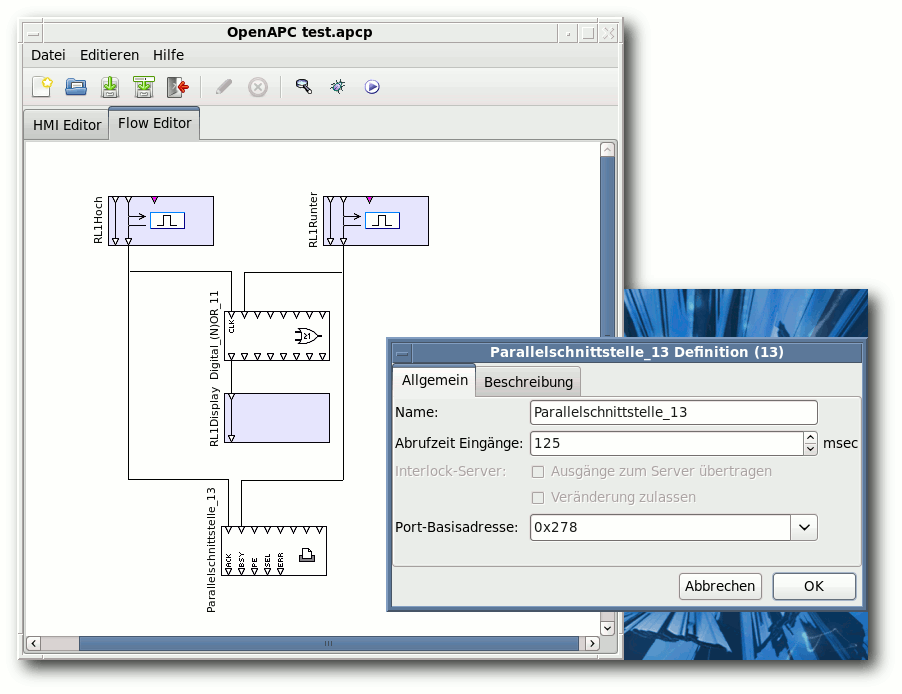
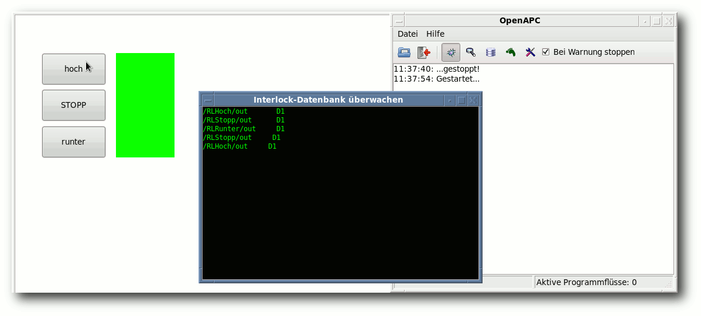

freiesMagazin März 2011 (ISSN 1867-7991)
Topthemen dieser Ausgabe
Wayland oder warum man X ersetzen sollte
Das X Window System ist mit über 25 Jahren geradezu der Methusalem in der Softwarewelt. Die aktuelle Protokollversion X11 aus dem Jahre 1987 ist vier Jahre älter als die erste Version des Linux-Kernels. Nun scheint die Freie-Software-Gemeinschaft aktiv daran zu arbeiten, X in den wohlverdienten Ruhestand zu schicken. (weiterlesen)
Datenströme, Dateideskriptoren und Interprozesskommunikation
Die Pipe ist vielen als eines der unter Unix mächtigsten Werkzeuge bekannt. Sie ermöglicht es, die Ausgabe eines Befehls direkt an einen anderen Prozess zu senden. Tatsächlich stellt die Standardpipe aber nur die einfachste Form der Interprozesskommunikation dar. Dieser Artikel beschäftigt sich mit den verschiedenen Möglichkeiten, Datenströme effizient zu verarbeiten, um- und weiterzuleiten. (weiterlesen)
GIMP-Tutorial: Farben durch Graustufen hervorheben (Colorkey)
Mit GIMP sind sehr viele schöne Spielereien möglich, einige davon lassen sich sogar sinnvoll einsetzen. Das folgende Tutorial soll zeigen, wie man einzelne Elemente auf Farbfotos hervorheben kann, indem man alles drumherum in Graustufen konvertiert („Colorkey“ genannt). Den einen richtigen Weg gibt es dabei aber nicht; viele Ansätze führen zum Ziel. (weiterlesen)
Zum Index
Inhalt
Linux allgemein
Wayland
Datenströme, Dateideskriptoren und Interprozesskommunikation
Der Februar im Kernelrückblick
Anleitungen
Python – Teil 6
GIMP-Tutorial: Colorkey
Software
Secret Maryo Chronicles
Gesunde Datenkekse backen mit Firefox
Hardware
Heimautomatisierung für Hardwarebastler (Teil 2)
Community
Rezension: Coders At Work
Magazin
Editorial
Leserbriefe
Veranstaltungen
Vorschau
Konventionen
Impressum
Zum Index
Editorial
Happy Birthday, freiesMagazin!freiesMagazin feiert fünfjähriges Bestehen
In der Regel gratuliert man sich ja nicht selbst zum Geburtstag, (außer man hat keine Freunde, die an sowas denken) aber sicherlich denkt nicht jeder Leser von selbst daran und auch wir wurden etwas überrascht, sodass wir weder mit Kuchen noch Geschenken aufwarten können. Aber am 18. März 2011 ist es soweit: freiesMagazin wird fünf Jahre alt. In der Initialmeldung war es noch ein reiner Newsletter [1], der dann aber im Laufe der Zeit zu einem eigenen Magazin heranwuchs, welches sehr erfolgreich Monat für Monat tausende Leser zu begeistern vermag. Dafür möchten wir uns bei Ihnen, den Lesern, und natürlich auch bei allen Autoren recht herzlich bedanken. Ohne diese beiden Parteien gäbe es kein Magazin. Aber auch hinter den Kulissen werkeln fleißige Hände, die jeden Monat ihre Zeit opfern, dieses Magazin zu gestalten. Wem Sie dafür danken können, finden Sie im Impressum. Wir hoffen, dass es noch weitere fünf Jahre mit freiesMagazin geben wird. Damit das sichergestellt ist, benötigen wir aber wie immer Ihre Hilfe. Zum einen freuen wir uns, wenn Sie freiesMagazin an Freunde, Kollegen und Interessenten weiterempfehlen. Die Downloadzahlen halten sich recht konstant (mit kleinen Abweichungen), aber die Lesergemeinde scheint nicht zu wachsen. Berichten Sie also ruhig in Blogs, in Newsportalen oder am Stammtisch von freiesMagazin. Zum anderen freuen wir uns aber auch über neue Autoren, die das Magazin mitgestalten. Wer Anregungen für ein Thema braucht, findet in der Leserwunschliste [2] sicherlich etwas passendes. Und falls nicht, freuen wir uns auch so über jeden Artikel. Vorschläge, Entwürfe und fertige Artikel können unterUmfrage zum dritten Programmierwettbewerb
Wie schon in freiesMagazin 02/2011 angekündigt, haben wir aufgrund der schwachen Teilnehmerresonanz zum dritten Programmierwettbewerb [3] von freiesMagazin eine Umfrage gestartet [4]. Die Umfrage lief bis zum 27.02.11, und uns interessierten natürlich die Gründe, warum potentielle Teilnehmer dem Wettbewerb ferngeblieben sind. Betrachtet man die Umfrageergebnisse, stellt man fest, dass die meisten Personen vor allem „fehlende Zeit“ von einer Teilnahme abgehalten hat – ganze 139 von insgesamt 235 abgegebenen Stimmen machten dies als Grund für die Nichtteilnahme aus. Die parallel zur Umfrage abgegebenen Kommentare weisen dann auch in die gleiche Richtung: Eingebunden in Beruf, Schule/Studium, Familie etc. bleibt in den Reststunden des Tages nicht viel Zeit für Wettbewerbe dieser Art. Auch wenn dies schade ist, nachvollziehbar ist es allemal. Welche Gründe gab es noch? An zweiter Stelle zeigten 51 Stimmen „fehlende oder zu späte Information“ über den Wettbewerb als Grund dür die Nichtteilnahme an. Auf gleicher Ebene (ebenfalls mit 51 Stimmen) rangiert der Grund, das die „Aufgabe zu schwer/kompliziert“ war. Weitere Stimmen verteilten sich auf die Gründe „Aufgabe/Thema reizte mich nicht“ (40 Stimmen) und „Programmieraufwand zu hoch“ (38 Stimmen). Dadurch, dass wir den zweiten Wettbewerb mit einer anspruchsvolleren Aufgabe toppen wollten, haben wir uns also selbst behindert und zu viele Programmierer verschreckt. Daraus wollen wir eine Lehre ziehen und werden den nächsten Wettbewerb entsprechend einfacher gestalten. Vor allem aber die Kritik mit dem nachträglichen Ändern der Regeln und der komplizierten Bewertungsfunktion werden wir uns zu Herzen nehmen. Wann es den nächsten Programmierwettbewerb geben wird, ist noch unklar. Und auch die Form – ob wieder ein Spiel oder zur Abwechslung eine echte Anwendung – ist noch nicht entschieden. Der Wunsch nach zweitem kam auch in den Kommentaren auf [5], wobei wir dann als Redaktion das Problem haben, einen Gewinner zu küren. Denn objektiv lassen sich nur wenige Kriterien festlegen, die eine Anwendung besser macht als eine andere. Vorschläge für neue Spiele als Basis des Wettbewerbs sind aber auch schon bei uns eingegangen.Gewinner des Bash-Gewinnspiels
Wer es nicht mitbekommen hat, soll an dieser Stelle darauf hingewiesen werden, dass es in der letzten Ausgabe von freiesMagazin 02/2011 [6] im Artikel „Rezension: Bash – kurz & gut” gleichnamiges Buch zu gewinnen gab. Die Frage war: „Welche neue Shell-Option für die Dateinamenersetzung ist in der Bash 4.0 hinzugekommen ist und was macht diese?“ Die gesuchte Option nennt sich globstar und und ermöglicht rekursives Globbing. Über den Ausdruck ** durchsucht man dann im Gegensatz zu * nicht nur alle Dateien und Verzeichnisse im aktuellen Verzeichnis sondern zusätzlich auch den Inhalt aller Unterverzeichnisse etc. Immerhin zwei Leser wussten die Antwort auf diese Frage. Etwas schneller war aber Christian H., dem wir noch einmal herzlich zum Gewinn gratulieren. Das Buch hat er bereits letzten Monat erhalten. Und nun wünschen wir Ihnen viel Spaß mit der neuen Ausgabe. Ihre freiesMagazin-Redaktion Links[1] http://ikhaya.ubuntuusers.de/2006/03/18/es-ist-soweit:-der-ikhaya-newsletter-ist-da/
[2] http://www.freiesmagazin.de/artikelwuensche
[3] http://www.freiesmagazin.de/dritter_programmierwettbewerb
[4] http://www.freiesmagazin.de/20110130-umfrage-teilnahme-dritter-programmierwettbewerb
[5] http://www.freiesmagazin.de/20110130-umfrage-teilnahme-dritter-programmierwettbewerb#comment-1666
[6] http://www.freiesmagazin.de/freiesMagazin-2011-02
Das Editorial kommentieren
Zum Index
Wayland oder warum man X ersetzen sollte
von Martin Gräßlin Das X Window System ist mit über 25 Jahren geradezu der Methusalem in der Softwarewelt. Die aktuelle Protokollversion X11 aus dem Jahre 1987 ist vier Jahre älter als die erste Version des Linux-Kernels. Nun scheint die Freie-Software-Gemeinschaft aktiv daran zu arbeiten, X in den wohlverdienten Ruhestand zu schicken.Der Beginn von Wayland
Vor zwei Jahren begann Kristian Høgsberg mit der Entwicklung eines „Display Servers”: Wayland [1] war geboren. Der Start hätte nicht schlechter sein können, denn Phoronix [2] posaunte es zu früh in einer Falschmeldung heraus. Wayland wurde als neuer X-Server bezeichnet, was es aber nicht ist [3]. Dies ist wohl immer noch einer der Gründe, warum es so ein starkes Missverständnis über Wayland gibt und viele zukünftige Nutzer Wayland aus Unwissenheit grundlegend ablehnen. Mittlerweile hat die Entwicklung von Wayland deutlich an Geschwindigkeit aufnehmen können [4], da Intel den Hauptentwickler angestellt hat, um Wayland für MeeGo zu implementieren. Große Distributionen wie Ubuntu [5] und Fedora [6] haben eine frühe Adaption angekündigt und die Entwickler von X-Fenstermanagern machen sich bereits Gedanken zur Portierung [7]. Selbst Keith Packard [8], das Gesicht von X, möchte in Zukunft nur noch aktiv an der Ablösung von X mitwirken [9].Die Vergangenheit von X
Um zu verstehen, warum an der Ablösung von X gearbeitet wird, muss man sich zuerst ein bisschen mit X auseinandersetzen. X hat sich in der Vergangenheit dank der Erweiterungen als äußerst flexibel gezeigt. Neue Technologien wie Compositing konnten integriert werden; auch größere Umstellungen wie die Verlagerung von Kernel Mode Settings in den Linux Kernel hat X überstanden. Warum kann man also nicht einfach so weiterarbeiten? X stammt aus den 80er Jahren des vorherigen Jahrhunderts und ist entwickelt für die Anforderungen der 80er Jahre. Vieles, was heute als „Vorteil” bezeichnet wird, war schlicht und ergreifend eine Notlösung. So gab es noch keine Shared Libraries [10]; der Code zum Zeichnen von grafischen Primitiven hätte für jede Anwendung in den Arbeitsspeicher kopiert werden müssen. Bei einer solchen Anforderung ist es naheliegend, ein Client/Server-Modell zu entwickeln, das es den Anwendungen erlaubt, das aufwendige Zeichnen in einen zentralen Prozess auszulagern und nur ein Protokoll zu verwenden, um Zeichenoperationen anzustoßen. Somit war die Netzwerktransparenz [11] von X11 eher ein Nebenprodukt der historischen Gegebenheiten. Die Aufgabe des X Window Systems war es also, Zeichenoperationen in Fenstern auszuführen und die Fenster zu verwalten. Jedes Fenster nimmt einen kleinen Bereich des Bildschirms ein und X muss dafür sorgen, dass diese Bereiche neu gezeichnet werden, wenn z. B. ein Fenster geschlossen wird, welches ein anderes überlappt. Das Konzept des Fenstermanagers [12] war im ursprünglichen X nicht einmal vorgesehen und so können Fenster sich selbst positionieren, die Größe ändern, Fokus anfordern, Tastatur an sich reißen und so weiter und so fort. Nur der Einsatz von Standards und „common sense” verhindert, dass es nicht ein wahlloses Chaos gibt und man hat heutzutage Fenstermanager, die sich darum kümmern, dass die Fenster sich benehmen. So bietet zum Beispiel der KDE-Fenstermanager KWin über Fensterregeln und JavaScript-Integration die Möglichkeit, so ziemlich jeden Fehler in Anwendungen in Bezug auf das Fenstermanagement zu beheben. Anwendungen, die sich nicht an die gemeinsamen Standards halten, gibt es dabei leider noch mehr als genug – und dazu zählen auch moderne und häufig verwendete Anwendungen wie Mozilla Firefox oder OpenOffice.org.Fenster heute
Heutzutage werden Fenster gänzlich anders auf den Schirm gebracht. Die primitiven Grafikoperationen wurden längst durch die hardwarebeschleunigte X-Erweiterung XRender [13] ersetzt. Aber selbst diese ist mittlerweile in die Jahre gekommen und es wird ihr nachgesagt, langsamer zu sein als die Software-Implementierung von Qt. Zum Teil litt sie auch unter der Vernachlässigung seitens der Treiberhersteller, was zu Performanceproblemen führte [14]. Mittlerweile ist auch für fast jede Grafikkarte ein guter OpenGL-Treiber vorhanden und mit Gallium3D [15] steht ein ausreichend schneller Softwarerenderer zur Verfügung, um Grafikoperationen nun ausschließlich mit OpenGL durchzuführen. Toolkits wie Qt brauchen somit nur noch eine Rendering Engine, um sowohl Linux, Embedded Systems, Mac OS X und Microsoft Windows zu unterstützen. Ein Fenster nimmt nicht mehr einen wohldefinierten Bereich des Bildschirms ein und der X-Server ist somit auch nicht mehr dafür zuständig, den Inhalt der Fenster passend abzuschneiden – heutzutage übernimmt der Compositor diese Aufgabe. Ein Fenster wird komplett in eine off-screen Pixmap gezeichnet („Redirect”) und der Compositor wird über Änderungen an dieser Pixmap informiert („Damage”). Der Compositor (meistens Bestandteil des Fenstermanagers wie z. B. KWin oder Compiz) generiert aus der Pixmap eine OpenGL-Textur und zeichnet diese auf den Bildschirm („Compositing”). Dabei kann der Compositor diese auch verändert darstellen, zum Beispiel mit Transparenz oder um eine Würfelkante herum gelegt.Probleme der Architektur
Auch wenn die Infrastruktur zum modernen Zeichnen von Fenstern grundsätzlich funktioniert, sind die Altlasten noch vorhanden und verursachen so ihre Probleme. So gibt es zwei Varianten von nicht angezeigten Fenstern: ein Fenster kann klassisch nicht „gemappt” sein (z. B. minimiert) oder der Compositor kann es beim Rendern ausblenden (z. B. das Filtern in KDEs „Fenster zeigen”-Effekt). Verwendet man nur die moderne Variante, dass der Compositor es ausblendet, denkt das Fenster, es sei angezeigt und verhält sich dementsprechend [16]. Ein Beispiel wäre ein Videoplayer, der die Anzeige einstellt, wenn er minimiert ist. Umgekehrt führt ein Unmappen des Fensters dazu, dass der Compositor die Pixmap nicht mehr zur Verfügung hat und somit das Fenster nicht anzeigen kann.Durch das Minimieren ist das Fenster nicht mehr verfügbar und ein Vorschaubild kann nicht angezeigt werden.
Ein viel größeres Problem ist jedoch, dass X immer noch die heute nicht mehr benötigten Altlasten mitschleppt und die Architektur immer noch darauf ausgerichtet ist. Vor allem die Client/Server-Architektur scheint hier die Schwachstelle zu sein. Der X-Server ist die zentrale Komponente, über die alles verteilt werden muss. Es werden immer wieder „roundtrips” zum Server benötigt. Bei einer lokalen Anwendung führt dies „nur” zu vielen überflüssigen Kontextwechseln [17]; bei einer entfernten Anwendung kann dies eine Anwendung stark ausbremsen.
Ideale Situation
In einer idealen Situation zeichnet jede Anwendung direkt in einen Puffer und der Compositor kann diesen Puffer direkt in OpenGL verwenden. Nur noch der Compositor entscheidet, wo sich ein Fenster befindet, ob es angezeigt wird oder nicht. Das Fenster selbst muss nichts über die eigentliche Position wissen und alles wird vom Compositor verwaltet. Tastatur und Mausereignisse werden vom Compositor weitergeleitet, denn er weiß, für welches Fenster das Ereignis ist, ob der „Schließen”-Knopf gedrückt wurde und um wie viele Pixel die Eingabe verschoben werden muss, um ein Fenster über den Würfel zu bewegen. Eine zentrale Komponente wie den X-Server gibt es nicht mehr. Und dies ist genau die Architektur von Wayland.Wayland Logo. © Kristian Høgsberg (modifizierte MIT-Lizenz)
{kind=link}
Die Mär der Netzwerktransparenz
Verfolgt man die Diskussionen zu Wayland in diversen linuxnahen Foren, so scheint die Netzwerktransparenz das Killerfeature zu sein, ohne das niemand einen Linux-Desktop einsetzen würde [18]. Jedoch ist fraglich, ob die X-Netzwerktransparenz heute überhaupt noch sinnvoll ist. Wie oben bereits angesprochen, ist die Netzwerktransparenz eher ein Nebenprodukt der Anforderungen der 80er, die eine Client/Server-Architektur benötigten. Heute zeichnen Anwendungen jedoch mittels OpenGL und nicht mehr über X11. Dies führt zu einigen unangenehmen Auswirkungen für die Netzwerktransparenz. Das Protokoll ist optimiert für das Zeichnen von Primitiven mittels X11. Nun zeichnen die Anwendungen entweder auf Software emuliert (z. B. Qt Raster Engine) oder hardwarebeschleunigt mittels OpenGL. In vielen Fällen wird einfach in eine Pixmap gezeichnet und mittels Blitting auf den Bildschirm bzw. die off-screen Pixmap transferiert. Widget Styles wie z. B. Oxygen aus dem Hause KDE setzen massiv auf Animationen. Diese benötigen sehr viele Pixmaps, die jedes Mal an den X-Server übertragen werden. Selbst in einem lokalen Netzwerk kann hierbei das Protokoll schnell an die Grenze kommen. Zum Übertragen von „Video” ist X11 aber nun wirklich nicht gedacht, denn es war optimiert für die primitiven Anforderungen des letzten Jahrhunderts. Ein anderes Problem für moderne Anwendungen ist die komplett fehlende Netzwerktransparenz von D-Bus. Kaum eine Anwendung kommt heute noch ohne D-Bus aus. Eine Benachrichtigung würde also an den falschen Rechner gesendet, Application Indicators werden in den falschen Systemabschnitt integriert, das Menü wird einfach nicht angezeigt und viele weitere Probleme werden in Zukunft auftreten. Dass die Netzwerktransparenz mit Wayland nicht mehr funktionieren wird, liegt nicht primär an Wayland, sondern daran, dass sie nicht mehr zeitgemäß ist. Als Ersatz für die Netzwerktransparenz wurde vorgeschlagen, diese direkt in die Toolkits (also GTK+ und Qt) zu integrieren – und dies wäre auch sinnvoll. Als Beispiel seien hier einmal Icons genannt. Für Icons gibt es eine freedesktop.org-Spezifikation [19]. Icons können über die verschiedenen Arbeitsflächen hinweg einheitlich angesprochen und ausgewählt werden. Mit X wird das Icon vom entfernten Rechner geladen und als Bild übertragen. Es weiß nichts über das verwendete Icon-Theme auf dem Zielrechner. Verlagert man die Netzwerktransparenz in das Toolkit, könnte die entfernte Anwendung einfach das Icon vom lokalen Rechner laden, sofern es dort vorhanden ist. Die komplette Übertragung des Icons ist somit wegoptimiert und die Anwendung fühlt sich nativer und lokaler an. Wayland kann auch X-Clients anzeigen und somit ist es auch in Zukunft möglich, noch die X11-Netzwerktransparenz zu nutzen. Noch auf Jahre werden Anwendungen X unterstützen. Das Argument der fehlenden Netzwerktransparenz ist für Wayland einfach nicht haltbar. Nutzer, die von Wayland profitieren, wissen nicht einmal, was die Netzwerktransparenz ist oder wofür sie sie einsetzen sollten. Die Zukunft von Wayland liegt mit Sicherheit auch bei Smartphones. Daher ist es nicht überraschend, dass Wayland OpenGL ES verwendet und von Intel gesponsort wird.Wie geht es weiter?
Bis Wayland für die Nutzer einsetzbar wird, wird noch einige Zeit vergehen: Toolkits müssen portiert werden, um von Wayland zu profitieren, Desktopumgebungen müssen sich von X lösen und Fenstermanager zu großen Teilen neu geschrieben werden. Die Arbeit dazu hat bisher höchstens im konzeptionellen Bereich begonnen. KDE Plasma dürfte von der existierenden Portierung auf Microsoft Windows profitieren, da es zeigt, dass man Plasma ohne X11 verwenden kann. Etwas komplizierter dürfte es für X-Fenstermanager werden. Diese wurden speziell für X entwickelt und gehen so ziemlich überall davon aus, dass sie auf X laufen. Fenstermanager, die bereits einen Compositor integrieren, haben hier zumindest einen Vorteil. Jedoch verwendet kaum ein Fenstermanager OpenGL ES. Der KDE Fenstermanager KWin befindet sich aktuell in Portierung und wird demnächst in die Hauptentwicklungslinie Einzug erhalten [20]. Die Fenstermanager müssen nun die X11 Abhängigkeit in Plug-ins auslagern, um auch ohne X11 starten zu können. Zusätzlich müssen sie das Wayland-Protokoll verwenden und eine möglichst große Kompatibilität herstellen. Gerade zur Standardisierung wie die Extended Window Manager Hints [21] gibt es aktuell noch keine Bestrebungen. Bis Wayland also voll einsatzfähig ist und die Nutzer sich von X verabschieden müssen, werden wohl noch Jahre vergehen. Der Umstieg auf Wayland ist ein wichtiges, aber lang andauerndes Projekt. Links[1] http://wayland.freedesktop.org/
[2] http://www.phoronix.com/vr.php?view=13065
[3] http://hoegsberg.blogspot.com/2008/11/premature-publicity-is-better-than-no.html
[4] http://cgit.freedesktop.org/wayland/log/
[5] http://www.markshuttleworth.com/archives/551
[6] http://lists.fedoraproject.org/pipermail/devel/2010-November/145273.html
[7] http://smspillaz.wordpress.com/2010/11/07/compiz-in-a-strange-new-land/
[8] http://de.wikipedia.org/wiki/Keith_Packard
[9] http://lwn.net/Articles/413335/
[10] http://de.wikipedia.org/wiki/Shared_Library
[11] http://de.wikipedia.org/wiki/Netzwerktransparenz
[12] http://wiki.ubuntuusers.de/Fenstermanager
[13] http://en.wikipedia.org/wiki/XRender
[14] http://kde.org/announcements/4.1/
[15] http://en.wikipedia.org/wiki/Gallium3D
[16] https://bugs.kde.org/show_bug.cgi?id=189435
[17] http://de.wikipedia.org/wiki/Kontextwechsel
[18] http://www.pro-linux.de/umfragen/2/31/braucht-eine-grafische-oberflaeche-netzwerktransparenz.html
[19] http://standards.freedesktop.org/icon-naming-spec/icon-naming-spec-latest.html
[20] http://blog.martin-graesslin.com/blog/2010/11/kwin-compiles-for-opengl-es/
[21] http://standards.freedesktop.org/wm-spec/wm-spec-latest.html
| Autoreninformation |
| Martin Gräßlin (Webseite) ist als KWin-Maintainer an einer Portierung zu Wayland sehr interessiert. |
Zum Index
Datenströme, Dateideskriptoren und Interprozesskommunikation
von Frank Stähr Die Pipe ist Vielen als eines der unter Unix mächtigsten Werkzeuge bekannt. Sie ermöglicht es, die Ausgabe eines Befehls direkt an einen anderen Prozess zu senden. Tatsächlich stellt die Standardpipe aber nur die einfachste Form der Interprozesskommunikation dar. Dieser Artikel beschäftigt sich mit den verschiedenen Möglichkeiten, Datenströme effizient zu verarbeiten, um- und weiterzuleiten. Auch wenn die meisten vorgestellten Technologien und Konzepte sowohl von der Programmiersprache als auch vom Betriebssystemen unabhängig sind, werden sie hauptsächlich an der Unix-Shell und vor allem der Bash verdeutlicht und Hinweise zu C / C++ gegeben. Hinweis: Dieser Artikel spricht in erster Linie Fortgeschrittene an, die viel programmieren oder skripten. Aber auch weniger versierte Nutzer haben keine Verständnisprobleme zu erwarten, wenn sie die meisten Beispiele ausprobieren und eventuell dem einen oder anderen weiterführenden Link folgen. Zurück zum Anfang: Eine „anonyme Pipe“ (deutsch: Rohr, Röhre) [1] wird mit dem Operator | erzeugt und bindet die Standardausgabe des ersten an die Standardeingabe des zweiten Befehls. Dies ist auch mehrfach hintereinander möglich, insgesamt also beispielsweise:$ dmesg | grep -n USB | tailDer weniger erfahrene Nutzer mag sich nun sofort die Frage stellen, ob und warum dieses Prinzip überhaupt wichtig ist – schließlich scheinen Pipes unter kommerziell vertriebenen Betriebssystemen praktisch gar nicht relevant zu sein. Dazu kann man mehrere Antworten geben:
- Zunächst ist eine universelle, portierbare und von der Benutzeroberfläche unabhängige Interprozesskommunikation (kurz IPC) [2] wichtiger Bestandteil der Unix-Philosophie [3] [4] und hat sich über Jahrzehnte als effizientes Prinzip der Programmierung und auch Anwendung bewährt. Vor allem beim wissenschaftlichen Arbeiten, Auswerten von Textdateien und dergleichen gestalten sich Pipes als zwingend notwendiges Instrument.
- In der Tat macht auch proprietäre Software stark von den verschiedenen Formen der Interprozesskommunikation Gebrauch, versteckt dies aber in der Regel im Quellcode einer höheren Programmiersprache. Dem Open-Source-Benutzer erscheinen die einzelnen Systemabläufe im Gegensatz dazu aber transparenter.
- Und schließlich sei im Gegensatz zum Bisherigen noch gesagt, dass die Grundidee von Pipes unter Umständen durchaus der von Closed Source widersprechen kann. Denn ein Programmierer freier Software achtet besonders auf die Wiederverwertbarkeit seines Werkes, eben auch und vor allem im Zusammenspiel mit anderen Programmen, während dies bei kommerzieller Software gerade nicht erwünscht ist, da es einer möglichen Interaktion mit einem „Konkurrenten“ gleichkommt. Deswegen und darüber hinaus auch wegen der Anwenderfreundlichkeit ist unfreie Software oft untrennbar mit einer grafischen Benutzeroberfläche verknüpft. Dieser Umstand resultiert in einer nur unerheblichen Bedeutung der Konsole und hat außerdem den interessanten Nebeneffekt, dass es z. B. unter MS Windows keinen guten, vorinstallierten Texteditor gibt (siehe „Notepad++ und Notepad2 – Open-Source-Editoren für Windows“, freiesMagazin 09/2010 [5]).
Umleitungen
Nichtsdestotrotz stellen Dateien in der Praxis die wichtigsten Datenquellen und -senken dar.Operatoren < und >
Für Umleitungen verwendet die Unix-Shell [6] die einfachen Pfeiloperatoren < und >, die symbolisch die Richtung des Datenflusses anzeigen. Dabei leitet < die nachfolgende Datei zur Standardeingabe des aktuellen Befehls, > gibt die Standardausgabe des Befehls in die nachfolgende Datei aus. Möchte man alle Zeilen einer Datei nach einem gewissen Suchbegriff filtern, ginge das beispielsweise mit$ <infile grep suchbegriff >outfileDiese Schreibweise mag dem einen oder anderen vielleicht etwas ungewohnt vorkommen, schließlich akzeptiert der grep-Befehl ja auch Dateinamen als Argument:
$ grep suchbegriff infile >outfileHier ist allerdings problematisch, dass der Name der Eingabedatei nicht klar gekennzeichnet ist, er könnte z. B. dem Suchbegriff ähneln – längere Befehle können so unübersichtlich werden.
$ cat infile | grep suchbegriff >outfileist dagegen keine Lösung, denn abgesehen von dem höheren Schreibaufwand und der unschönen Zweckentfremdung des Befehls cat – dieser verkettet mehrere Dateien – wird auf diese Weise ein ganz neuer, unnötiger Prozess gestartet [7]. Darüber hinaus unterstützen nicht alle Befehle das Einlesen von Dateien per Parameterübergabe, die Konsole ist generell sogar Standard. Man kann in den obigen Befehlen etwa die Ausgabedatei weglassen, oder die Eingabedatei – oder beides. Weiterhin können, da keinerlei Verwechslungsgefahr der Datenströme besteht, die Dateiumleitungen von Ein- und zu Ausgabe im Befehl vollkommen beliebig positioniert werden, sodass die vierte Variante
$ >outfile grep <infile suchbegriffidentisch zu den anderen drei ist. Man sollte sich in diesem Fall noch einmal darüber im Klaren sein, dass <infile kein Kommandozeilenparameter von grep ist – genausowenig wie >outfile in den vorherigen Beispielen. Beide werden vor dem Aufruf von grep von der Shell interpretiert. Die Zieldatei wird, sollte sie schon existieren, ohne Rückfrage überschrieben. Daher ist es im Übrigen auch möglich, sie mit
$ >outfilezu leeren. Dies ist etwa für Logdateien sinnvoll. Abgesehen von dem minimalen Aufwand hat diese Methode den Vorteil, dass Prozesse, die gerade in diese Datei schreiben, nicht neu gestartet werden müssen. Würde man beispielsweise per
$ cp original zieleine große Datei erstellen und sie währenddessen in einer zweiten Konsole mit
$ rm ziel && touch zielversuchen zu leeren, so gibt es im besten Fall keine Fehlermeldung, das gewünschte Ergebnis erhält man aber definitiv nicht. Denn der Schreibvorgang verliert wegen der Löschaktion das korrekte Datei-Handle auf ziel, nach seinem Abschluss werden daher alle geschriebenen Daten verworfen und es bleibt wegen des touch-Befehls lediglich eine vollkommen leere Datei übrig. Korrekt ist somit
$ >zielwobei außerdem die Zugriffsrechte von ziel erhalten bleiben. Auch wenn sich dieser Artikel an der Bash orientiert, sei noch gesagt, dass der Befehl in einigen Shells nicht funktioniert, in diesem Falle hilft stattdessen
$ : >outfileDabei ist der Doppelpunkt der „Nullbefehl“, also eine Art Platzhalter – er hat keine Ausgaben, ignoriert alle Eingabeströme und Parameter und vermeldet dem Betriebssystem eine erfolgreiche Ausführung, d. h. den Rückgabewert 0. Es ist aber auch möglich, die Ausgabe mittels >> statt > an existierende Dateien anzuhängen:
$ ls >> verzeichnisliste
Hier-Dokumente
Damit kommt sofort die Frage auf, welche Funktion der Operator << erfüllt. Unglücklicherweise passt die Antwort weder zur Logik der drei anderen Operatoren noch erschließt sich einem der Sinn der Anwendung auf Anhieb: << erzeugt ein sogenanntes „Hier-Dokument“ (auch Heredoc) [8]. Das ermöglicht es, eine längere Zeichenkette direkt in der Kommandozeile zu tippen und an die Standardeingabe weiterzuleiten. Nach << folgt ein Delimiter, der das Ende des einzugebenden Textes anzeigt. Der Aufruf$ grep foo << ende | sort > foo > bar > eof foo > endemündet in der Ausgabe
eof foo fooWas ist passiert? Der Eingabestring lautet
foo bar eof foound wird direkt als Standardeingabe an grep übergeben. Aus ihm werden alle Zeilen, die foo enthalten, gefiltert und das Resultat sortiert. Genauso ginge
$ grep foo << eof | sort > foo > bar > eof foo > eofUm die Zeichenkette zu beenden, muss der Trenner, hier eof statt wie vorhin ende, also ganz alleine in der letzten Zeile stehen, auch Leerzeichen sind dann verboten. Er ist frei wählbar, sollte aber natürlich mit keiner der Eingabezeilen identisch sein. Zu diesem Kommando gibt es zwei Alternativen:
- Ruft man grep ohne Eingabedatei auf, wird wie oben automatisch
die Standardeingabe gewählt. Liegt diese noch nicht vor, verlangt
sie das Terminal per Prompt. Folglich
$ grep foo | sort
Zur Endmarkierung des anschließend manuell einzugebenden Strings genügt die Tastenkombination „Strg“ + „D“, sie sendet ein End-of-File [9] an die Pipe. - Die Eingabe kann natürlich auch über eine Datei erfolgen.
$ cat <<- 42 Dies ist Zeile 1 der Nachricht. Dies ist Zeile 2 der Nachricht. Dies ist die letzte Zeile der Nachricht. 42Im Internet-FAQ-Archiv [10] findet man noch einige andere Anwendungen und Tricks. Hier-Dokumente werden auch von Perl, Python, PHP und anderen Sprachen zur Verfügung gestellt, teils in anderer Syntax. Ein nützlicher Spezialfall ist der Hier-String [11], der durch <<< eingeleitet und ein einfaches „Enter“ abgeschlossen wird. Statt
$ echo "sqrt(25.000)" | bckann man sich einen Prozess sparen:
$ bc <<< "sqrt(25.000)"Da die Anführungszeichen die Zeichenkette eindeutig definieren, ist auch eine andere Reihenfolge erlaubt:
$ <<< "sqrt(25.000)" bc
Dateideskriptoren
Mehrere Befehle in geschweiften Klammern bilden Einheiten. Eventuelle Ein- und Ausgaben werden dann so gehandhabt, als ob nur ein Befehl aufgerufen würde.
$ { touch /Tresor; echo 23; }
gibt zwei Zeilen aus. Man beachte das Leerzeichen nach der öffnenden
Klammer und das zweite Semikolon. Leitet man das Resultat nun aber
per >output in eine Datei um, macht man eine interessante
Feststellung: Eine Zeile landet in dieser Datei, die Fehlermeldung
wird aber weiter auf der Konsole ausgegeben. Das Betriebssystem kann
folglich verschiedene Arten von Ausgaben voneinander unterscheiden,
ohne dass die entsprechenden Kanäle explizit dem Anwender angezeigt
werden.
Das entsprechende Konzept sind die „Dateideskriptoren“ (auch
Datei-Handles, Handles) [12].
In POSIX-konformen Systemen [13]
sind sie im Grunde lediglich nicht-negative, ganze Zahlen, die vom
Kernel an bestimmte Ein- oder Ausgabeströme gebunden werden. Dies
mag unnötig technisch wirken – die Idee lässt sich dahingehend
abstrahieren, dass Zahlen als Identifikatoren für Datenströme
dienen, denn sie werden pro Prozess bzw. pro Shell eindeutig
vergeben. Mit Handles umgeht man komplexe Aufgaben wie etwa Pufferung.
Als Standard sind die ersten drei Werte in der Konsole bereits
reserviert: 0 für die Standardeingabe, 1 für die Standardausgabe und
2 ist der Kanal der Fehlerausgabe. Gerade der letzte Deskriptor ist
sehr sinnvoll, um fehlerhafte Programmausführungen vom Rest zu
trennen. Die Kanäle kann man mit den Umleitungsoperatoren auch
direkt ansprechen, dazu folgende Beispiele:
- Das Kommando
$ { touch /Tresor; echo 23; } >output 2>>fehler.logtut fast das gleiche wie eben, nur wird zusätzlich die Fehlermeldung nicht auf der Konsole gezeigt, sondern an eine Logdatei angehängt. - Der obige Befehl bleibt, wird aber nach >output 2>&1 umgeleitet. Dann erhält die Datensenke zunächst nur die Standardausgabe, aber danach wird auch der Deskriptor 2 auf 1, also in die Datei, umgeleitet.
- Ganz anders verhält es sich mit vertauschter Reihenfolge:
$ { touch /Tresor; echo 23; } 2>&1 >outputleitet zunächst den Fehlerkanal zum Terminal um, anschließend Kanal 1 in eine Datei. Auf diese Weise kann man die Fehlerausgabe mit der Pipe weiterverarbeiten.
- m>&n übergibt die Ausgabe, die normalerweise an Handle m geht, an Handle n.
- m<&n nimmt eine Eingabe aus Handle m entgegen, die aber ursprünglich aus Handle n stammt.
- Zwischen Umleitungssymbolen und Deskriptoren dürfen keine Leerzeichen stehen. In anderen Fällen, etwa Dateien, sind sie hingegen erlaubt.
- Quell- und Zieldateideskriptoren, d. h. die Zahlen hinter den spitzen Klammern, werden mit dem Symbol & gekennzeichnet.
- Die Angabe von > ist ein Synonym für 1> und < entspricht 0<.
- Außerdem schließt n>&- bzw. n<&- den Kanal n.
exec
Dateideskriptoren kann man mit exec [16] dauerhaft umhängen oder neu erstellen. Dabei sollten sie nicht größer als 9 sein, da sie dann mit Dateideskriptoren, die die Shell intern nutzt, in Konflikt geraten könnten. Mittels$ exec 5>logfileöffnet man logfile über Kanal 5 als Datensenke und kann anschließend beliebig viele Ausgaben mit >&5 oder speziell Fehlermeldungen mit 2>&5 an diese leiten. Erst mit
$ exec 5>&-wird der Schreibvorgang abgeschlossen und die Datei würde bei Wiederholung dieser Befehlsabfolge überschrieben werden. Ganz ähnlich gestaltet sich die Verwendung einer Datei als Datenquelle, und sogar beides ist möglich: Eine Datei, die zumindest ein paar Textzeilen enthalten sollte, wird per
$ exec 6<>rwfilezum Lesen und Schreiben geöffnet. Nun könnte man mit
$ head -n 2 <&6 $ echo overwrite >&6zunächst die ersten beiden Zeilen auslesen und anschließend etwas in die Datei schreiben. Mit diesen und ähnlichen Kommandos wird ersichtlich, dass der Deskriptor immer eine bestimmte Position im Datenstrom hat, die stets an das Ende der zuletzt berührten Zeichenkette gesetzt wird und dort auch mit neuen Lese- oder Schreibvorgängen beginnt; bei letzteren wird byteweise überschrieben. Es ist egal, mit welchem der Befehle
$ exec 6>&- $ exec 6<&-man das Handle schließt. Deskriptoren haben vielfältige Anwendungen, von denen einige im Folgenden näher erläutert werden.
Ausgaben dauerhaft in eine Datei umleiten
Mit einem einfachen exec >logfile würde leider der Deskriptor verloren gehen, daher muss er vorher gesichert werden:$ exec 6>&1 $ exec >logfileZunächst zeigt Kanal 6 auf 1, also auf das Terminal, die zweite Zeile leitet 1 in eine Datei.
$ ls # und diverse andere BefehleDie Konsole gibt dann nur noch eventuelle Fehlermeldungen aus. Ein abschließendes
$ exec 1>&6 6>&-stellt den Ursprung wieder her: 1 zeigt auf 6, also auf das Terminal, 6 wird geschlossen. Ganz analog kann man so die Standardeingabe an eine Datei binden. Mit diesem Beispiel sieht man auch, dass exec nicht mit Verknüpfungen arbeitet, sondern echte Kopien erstellt – nur so ist es möglich, Sicherheitskopien derart zu verwalten. Für Kanal 1 bzw. für die Konsole bietet aber auch das Betriebssystem eine solche Sicherheitskopie, das Terminal versteckt sich nämlich in der Datei /dev/tty. Obige Befehlsfolge entspricht daher:
$ exec >logfile $ ls # und anderes $ exec >/dev/ttyDie Logdatei kann man sich jeweils anzeigen lassen:
$ more logfile
Versteckte Informationen für die GUI
Wie bereits erläutert stellen viele proprietäre Programme von Haus aus eine grafische Benutzeroberfläche bereit, die nicht nur schmückendes Beiwerk ist, sondern sich ohne Weiteres weder austauschen noch überhaupt entfernen lässt und den Benutzer in seinen Möglichkeiten einschränkt. Die Verschmelzung von GUI und Programmfunktionalität dient in erster Linie der einfachen Bedienbarkeit, was natürlich nichts Schlechtes ist, denn so können die verschiedenen Teilmodule besser aufeinander abgestimmt werden. Unter Umständen ist es eben sehr praktisch, wenn die GUI gewisse Informationen von der ausführenden Anwendung erhält. Ein wirklich gutes Programm läuft allerdings grundsätzlich ohne Benutzeroberfläche, ist also auf seine Funktionalität beschränkt. Im Folgenden sollen die Vorteile von beiden Herangehensweisen mittels Meldungen an die Benutzeroberfläche verknüpft werden. Solche sind aber leider nicht immer über die voreingestellten Kanäle 1 und 2 möglich, denn 2 ist wirklich nur für Fehlermeldungen, während 1 gemäß Unix-Philosophie standardmäßig keine Rückmeldung auf den Bildschirm gibt. Für so eine Aufgabe sind zusätzliche Dateideskriptoren vorteilhaft. Als Beispiel soll ein Programm copy.sh betrachtet werden, dass eine einzelne Datei kopiert, d. h., einen Spezialfall von cp darstellt. Es könnte in etwa so aussehen:
#!/bin/bash
size=$(stat -c%s "$1")
if [ $size -lt 9900 ]; then
cp "$1" "$2"
exit 0;
fi
exec 3<"$1" 4>"$2"
puffer=$(($size/100))
for ((i=0; i <= 100; i++)) do
<&3 head -c $puffer >&4
{ echo $i >&7; } 2>/dev/null
done
exec 3<&- 4>&-
Listing: copy.sh
Der head-Befehl kopiert die Quelle immer blockweise ins Ziel,
kleine Dateien werden hingegen auf einmal kopiert. Interessant ist
Zeile 14, sie liefert über Kanal 7 eine Fortschrittsanzeige des
laufenden Prozesses in Prozent. An dieser Stelle wurde auch noch
etwas getrickst, denn normalerweise muss dieser neue Deskriptor erst
definiert werden. Stattdessen wird die Fehlermeldung
bash: 7: Bad file descriptordirekt nach /dev/null geleitet. Das Skript kann mit
$ ./copy.sh quelldatei zieldateiausgeführt werden und beendet sich im Erfolgsfall wie gewünscht still und leise, genau wie cp. Wer den Code ausprobieren möchte, muss bedenken, dass die Anwendung aus didaktischen Gründen sehr einfach gehalten ist und daher auf einige Sicherheitsabfragen und Komfort verzichtet, die Quelldatei muss beispielsweise existieren. Zur Erstellung einer (in diesem Fall recht rudimentären) grafischen Oberfläche kann man Zenity [17] verwenden, welches einfache Dialoge und Fenster bietet und unter GNOME meist vorinstalliert ist (siehe „Zenity und KDialog“, freiesMagazin 03/2007 [18]). Somit enthält das Skript copy_gui.sh lediglich:
#!/bin/bash exec 7>/dev/null ./copy.sh "$1" "$2" 7>&1 | zenity --progress exec 7>&-Listing: copy_gui.sh Die Prozentzahlen werden von Kanal 7 entgegengenommen, an die Standardausgabe geleitet und über eine anonyme Pipe an Zenity weitergegeben, das – mit den richtigen Optionen aufgerufen – den Rest erledigt. Der Aufruf ist wie eben
$ ./copy_gui.sh quelldatei zieldateiBei großen Dateien sieht man nun sehr gut die Fortschrittsanzeige des Kopiervorgangs. Das KDE-Pendant zu Zenity ist im Übrigen KDialog, entsprechend müsste die entscheidende Zeile
./copy.sh "$1" "$2" 7>&1 | kdialog --progressbarlauten. Auch C kann mit der Funktion
int write(int fd, const void *puffer, size_t bytezahl)direkt einen beliebigen Dateideskriptor anschreiben, z. B. Kanal 8 per
write(8, "Hallo\n", 6);Es ist in C++ mit der richtigen Bibliothek [19] sogar möglich, aus einem gegebenen Kanal das zugehörige stream-Objekt zu bestimmen, daher entspricht der Codeschnipsel
fdostream output(8); output << "Hallo\n";dem obigen.
TCP-Verbindungen offenhalten
Unter Unix ist alles eine Datei – Laufwerke, Geräte und sogar Dateideskriptoren sowie TCP- und UDP-Verbindungen. Daher ist$ date >&5identisch zu
$ date >/dev/fd/5und
$ echo message >/dev/tcp/host/portschickt eine Nachricht an einen Port eines bestimmten Hosts, z. B. einer Internetadresse. Die Shell kümmert sich dabei automatisch um den Verbindungsaufbau, Datenübertragung und abschließenden Verbindungsabbau. Man beachte, dass schon der Ordner tcp gar nicht existiert, man also den größten Teil des Pfades manuell, d. h. ohne Autovervollständigung, eingeben muss [20]. Zum Testen kann man dafür die Netcat-Programme verwenden, die über das Paket nmap installiert werden.
$ nc -l 5555startet einen Server, der nun auf eine eingehende Verbindungen wartet, während
$ cat >/dev/tcp/localhost/5555in einer anderen Konsole desselben Rechners eine Nachricht an diesen sendet. Oder von ihm empfängt:
$ read </dev/tcp/localhost/5555Auf der Serverseite kann man nun eine Zeile absenden und sie sich mit echo $REPLY beim Client ansehen. Nachteilhaft ist hier, dass die Verbindung jeweils nach einer Datenübertragung sofort beendet wird. Abhilfe schafft
$ exec 4>/dev/tcp/localhost/5555auf Seiten des Clients. Da TCP nach erfolgreichem Verbindungsaufbau nicht mehr zwischen Server und Client unterscheidet, sind statt > auch die spitzen Klammern < oder gar <> möglich. Nun ist die Verbindung an Dateideskriptor 4 gebunden und es können beliebig viele Daten ausgetauscht werden; beendet wird erst mit
$ exec 4>&-Statt TCP ist auch UDP als Protokoll möglich.
Dateien offenhalten
Generell werden mit Handles also Schreib- und Lesezugriffe von Prozessen auf gewisse Datenströme – meistens eben Dateien – offen gehalten. Als letzte Verdeutlichung betrachte man noch den Löschbefehl [21]. rm ist von allen Befehlen unter Unix sicherlich einer der erstaunlichsten: Vielen mag bekannt sein, dass Dateien nicht vollständig gelöscht, sondern der Einfachheit halber nur aus dem Dateisystem entfernt werden, der eigentliche Inhalt wird bei späteren Schreibzugriffen zufällig überschrieben. Viel interessanter ist aber das Verhalten bei Dateien, auf die noch ein Deskriptor gesetzt ist: Zunächst wird dann nur der Verzeichniseintrag gelöscht, der belegte Speicherplatz wird aber vom Betriebssystem erst freigegeben, wenn der Deskriptor geschlossen wird. Bis dahin können die Daten noch ausgelesen werden. Dieses Verhalten macht sich beispielsweise dadurch bemerkbar, dass man eine Mediendatei noch abspielen kann, obwohl sie bereits verschoben oder gar gelöscht ist. Möchte man eine Datei einlesen, verarbeiten und unter demselben Namen abspeichern, lässt sich dieser Effekt geschickt einsetzen. Ein$ <infos head -n 2 >infoswird wahrscheinlich scheitern, da infos vor der Prozessausführung vom Schreibvorgang geleert wird. Stattdessen könnte man verwenden:
$ exec 3<infos $ rm infos $ <&3 head -n 2 >infos $ exec 3<&-Diese Befehlsabfolge ist allerdings eher ein Trick und nicht unbedingt für die Anwendung geeignet, kürzer und naheliegender erscheint nämlich die Alternative
$ <infos head -n 2 >tempfile $ mv tempfile infosdie jedoch das theoretische Problem mit sich bringt, dass tempfile eine schon existierende Datei überschreiben könnte – zur Absicherung wäre tatsächlich also doch noch mehr Aufwand nötig. Darüber hinaus kann man durch Streichen von exec 3<&- erreichen, dass man zu einem beliebigen späteren Zeitpunkt auf die Ursprungsdatei zugreifen und etwa mit
$ <&3 head -n 2die nächsten beiden Zeilen auslesen kann.
Benannte Pipes
Pipes sind unidirektional und bieten, da Shell-Kommandos von links nach rechts abgearbeitet werden, keine Möglichkeit, Ergebnisse „nach vorne“ zurückzureichen. Außerdem gelten anonyme Pipes nur zwischen Eltern- und Kindprozessen, beide müssen also vereinfacht gesagt in „derselben Zeile“ gestartet werden. Eine Lösung dieser Probleme sind „benannte Pipes“, auch FIFOs genannt (englisch: Named Pipes) [22]. Trotz ihrer geringen Bekanntheit eignen sie sich optimal für IPC im lokalen Netz, auch auf Grund ihrer leichten Handhabbarkeit. Eine FIFO wird mit$ mkfifo npipeerzeugt und erscheint einem fast wie jede andere Datei: Sie kann kopiert, verschoben, umbenannt und gelöscht werden, besitzt Zugriffsrechte usw. Bei einer Auflistung via ls -l npipe fällt allerdings schon der Dateityp „p“ auf [23]. Der Inhalt einer FIFO befindet sich allein im Arbeitsspeicher, im Dateisystem wird ihre Größe immer mit Null angezeigt. Außerdem benötigt sie, um Daten halten zu können, zumindest einen lesenden oder einen schreibenden Prozess. Ein Beispiel fürs Verständnis:
$ echo Hallo Welt > npipeschiebt eine Zeichenkette in die FIFO. An dieser Stelle kann man zunächst keinen weiteren Befehl eingeben, denn benannte Pipes arbeiten grundsätzlich blockierend. Das heißt, obwohl der echo-Befehl nach seiner Ausführung eine EOF-Bedingung erfüllt, darf der Schreibvorgang nicht beendet oder beispielsweise mit „Strg“ + „C“ gar vorzeitig abgebrochen werden, denn dann gingen die Daten verloren. Stattdessen muss man von einer anderen Konsole aus die Eingabe auslesen, etwa mit
$ more npipeInteressanterweise können die beiden Befehle sogar in umgekehrter Reihenfolge gestartet werden. Die FIFO blockiert lesenden und schreibenden Prozess so lange, bis über sie eine Verbindung zwischen den beiden hergestellt ist und alle Zeichen übertragen werden können. Eine einmal aufgebaute Verbindung darf dabei nicht vom Leser abgebrochen werden, da dann die Pipe zerstört wird und alle noch gehaltenen Informationen verloren gehen.
Bidirektionale Interprozesskommunikation
Zwei Programme, die jeweils von der Standardeingabe lesen und auf die Standardausgabe schreiben, können so über eine benannte Pipe sehr effizient kommunizieren. Eigentlich erforderte jede Kommunikationsrichtung eine FIFO, aber zusammen mit einer anonymen Pipe genügt$ <npipe programm1 | programm2 >npipeDie Kommunikation könnte man darüber hinaus noch mit einem
$ echo "erster Wert" >npipeanstoßen. Sobald npipe vom einen Prozess Daten erhält, leitet sie sie an den anderen weiter. Es gibt keine Endlosschleife, die permanent überprüft, ob Daten vorliegen, und auch das Ende der Kommunikation wird durch das Schließen der schreibenden Seite automatisch angezeigt und erscheint der lesenden wie das Ende einer regulären Datei. Auch der Fall, dass eventuell zu viele Daten vorliegen, die nicht so schnell vom Leser verarbeitet werden können, stellt kein Problem dar, denn dann wird schlicht der schreibende Prozess blockiert. Das bedeutet, benannte Pipes bringen naturgemäß eine Flusskontrolle mit sich, im Übrigen genau wie anonyme. Der Pufferspeicher ist für beide unter Linux allerdings sehr beschränkt, bei größeren Datenmengen wird daher meist auf die Methode des Blockierens zurückgegriffen. Da die stattgefundene IPC zwischen den Programmen nicht auf der Konsole sichtbar ist, empfiehlt sich zusätzlich noch der Befehl tee. Er leitet nicht nur die Standardein- an die -ausgabe weiter, sondern kopiert sie außerdem noch in alle Dateien, die tee als Argumente übergeben bekommt:
$ <npipe programm1 | tee log_1zu2 | programm2 | tee log_2zu1 >npipeMit der Option -a kann tee den Datenstrom auch an bestehende Dateien anhängen, statt sie zu überschreiben. Benannte wie auch anonyme Pipes können in C und anderen höheren Programmiersprachen direkt erzeugt und verwaltet werden [1] [24] [25].
Prozesssubstitution
Aber damit noch nicht genug. Wie bereits erläutert stellen die geschweiften Klammern in der Unix-Shell die logische Kapselung von Befehlen dar. Im Gegensatz dazu erzeugen die runden Klammern eine eigene Subshell, in der beispielsweise eigene lokale Variablen gelten. Man vergleiche nur$ katze=Felix $ ( katze=Mauzi; echo $katze ) Mauzi $ echo $katze Felixmit einem anschließenden
$ { katze=Minka; echo $katze; }
Minka
$ echo $katze
Minka
Die Bash verknüpft Subshells auf eine wirklich clevere Weise mit
FIFOs: Setzt man eine spitze Klammer ohne Leerzeichen vor eine
Subshell, gibt sie stattdessen an die äußeren Befehle den Namen
einer temporären FIFO zurück, aus der Daten ausgelesen oder in die
welche geschrieben werden, je nachdem, ob man < oder > setzt. Die
Subshell wiederum liefert oder empfängt die Daten über ihre
Standardaus- oder -eingabe.
$ cmp <(ls /ordner1) <(ls /ordner2)überprüft somit, ob zwei Ordner die gleichen Dateinamen beinhalten. „Prozesssubstitution“ [26] ist also immer dann hilfreich, wenn Dateien als Datenquelle oder -senke zwingend erforderlich sind und abgesehen von dieser Einschränkung an Ort und Stelle weiterverarbeitet werden können. Möchte man eine Eingabe vervielfachen, um damit verschiedene Befehle abzuarbeiten, ginge etwa
$ ls | tee >(grep foo | wc >foo.count) >(grep bar | wc >bar.count) | grep baz | wc >baz.count
Anwendung: Programmierwettbewerb
Die bisherigen Wettbewerbe von freiesMagazin erforderten in der Regel IPC im lokalen Netz. Ein typisches Szenario ist die Organisation eines Spiels zwischen zwei Clients, also Bots, durch einen Server. Dieser könnte so konzipiert sein, dass er mit$ server input1 input2 output1 output2gestartet wird. Die vier Argumente sind dabei allesamt Ein- oder Ausgabedateien: input1 enthält alle Befehle, die Bot 1 an den Server schickt, output1 alle, die er vom Server erhält; analog input2 und output2. Die Bots selbst empfangen und senden Nachrichten über die Kanäle 0 und 1, in C++ beispielsweise via std::cin und std::cout. Mittels Prozesssubstitution können zwei der vier Datenströme realisiert werden, die anderen beiden benötigen manuell angelegte FIFOs. Um sicherzustellen, dass man keine bestehenden Dateien überschreibt, kann man mit mktemp eine temporäre Datei erzeugen. Da aber gar keine reguläre Datei gewünscht ist und mktemp den Dateinamen zurückgibt, kann mit der Option -u auch die eigentliche Erzeugung unterdrückt werden:
$ pipe1=$(mktemp -u); pipe2=$(mktemp -u); $ mkfifo $pipe1 $pipe2 $ server <(<$pipe1 bot1) <(<$pipe2 bot2) $pipe1 $pipe2 $ rm $pipe1 $pipe2Genauso ginge
$ server $pipe1 $pipe2 >(bot1 >$pipe1) >(bot2 >$pipe2)Die Idee lässt sich offensichtlich auf beliebig viele Clients verallgemeinern. Der Durchlauf könnte auch noch mit tee geloggt werden, oder aber der Server speichert die Konversation oder zumindest die Spielergebnisse selbstständig ab. Die Vorteile dieses Verfahrens sind offensichtlich:
- Die Programmierung der Bots ist so am einfachsten, denn in praktisch jeder Programmiersprache sind die Dateideskriptoren 0 und 1 sehr leicht ansprechbar.
- Die Bots sind auf ihre Funktionalität beschränkt, was auch einem guten Programmierstil entspricht. Schließlich weiß man nie, in welcher Umgebung sie später eingesetzt werden.
- Gleiches gilt natürlich auch für den Server.
Sockets
Muss ein Bot nun doch über das lokale Netz hinaus aktiv werden, so empfiehlt sich statt einer aufwändigen Änderung des Quellcodes die Verwendung eines externen Programms. Der Befehl ncat, ebenfalls im Paket nmap enthalten, bietet dafür die Option -e, die alle Ein- und Ausgaben eines Programms mit der von ncat verwalteten Netzverbindung verdrahtet. Zur Veranschaulichung hilft wieder ein kleines Beispiel: Nach dem Start eines Servers mit$ nc -l 5555initiiert der Befehl
$ ncat -e bot localhost 5555in einer anderen Konsole desselben Rechners die TCP-Verbindung. Auf der Serverseite kann man nun Befehle manuell eingeben. Statt localhost ist natürlich auch hier eine beliebige Internetadresse möglich. Für kompliziertere Aufgaben – mehrere Bots, ein automatisierter Server – genügt die Konsole allerdings nicht mehr. Hier hilft nur noch Socketprogrammierung. Auf Grund der Komplexität dieses Themas wird nur auf die vielen Hilfen des Internets wie etwa zotteljedi.de [27] verwiesen und in diesem Artikel nicht weiter darauf eingegangen. Wichtig ist aber, dass unter Unix tatsächlich auch der Dateityp „Socket“ zur Verfügung steht. Liegt bereits ein fertiger Server wie oben vor, der Ein- und Ausgabedateien liest, kann man folglich statt regulären Dateien und statt FIFOs auch diese Sockets verwenden. Unter Unix ist eben wirklich alles eine Datei. Allerdings muss man dann beachten, dass Sockets grundsätzlich bidirektional arbeiten – ein weiterer Vorteil gegenüber Pipes.
Dateien im Arbeitsspeicher
Was ist nun aber, wenn man einen Datenstrom nicht sofort verarbeiten kann oder will oder aber mehrmals benötigt, wenn also reguläre Dateien alternativlos sind? Für diesen Fall gibt es das „Temporary File System“ tmpfs [28], das unter jedem moderneren Linux bei /dev/shm eingebunden ist. Dessen Inhalt liegt komplett im Arbeitsspeicher, sodass I/O-Operationen sehr schnell ablaufen. Der Ordner /dev/shm funktioniert grundsätzlich wie jeder andere, er kann Verzeichnisse und Dateien enthalten, die gelesen, kopiert und gelöscht werden können. Nur muss man sich im Klaren darüber sein, dass bei einem Neustart alles verloren geht. Außerdem ist die Größe dieses Laufwerks beschränkt, sie liegt standardmäßig bei der Hälfte des Arbeitsspeichers. Der genaue Wert ergibt sich aus$ df -h /dev/shmDieser Speicher ist aber rein virtuell, tatsächlich reserviert ist nur der RAM, der auch wirklich von Dateien belegt ist und damit gebraucht wird. Dies ist der entscheidende Unterschied zur RAM-Disk [29], die ihrerseits aber den Vorteil der Betriebssystemunabhängigkeit besitzt. Eine Änderung der Größe bzw. der maximalen Größe von tmpfs ist möglich:
# mount -o remount,size=3G /dev/shmAuch wenn notfalls Speicher auf die Swap-Partition ausgelagert wird, sollte man an dieser Stelle allerdings wissen, was man tut, da falscher Gebrauch zu Systeminstabilität führen kann. Temporäre, oft gebrauchte Dateien können somit effizient zwischengespeichert werden [30].
Fazit
Programme werden so entworfen, dass sie mit anderen Programmen verknüpft werden können, und sie verarbeiten Textströme, denn dies ist die universelle Schnittstelle – mit solchen simplen Regeln wurde einst der Startschuss für die verschiedenen Formen der Interprozesskommunikation gegeben. Als Anwender muss man abhängig von der Situation jeweils nur die geeignetste wählen und hat die Möglichkeit, eigene Skripte und Programme modular aufzubauen, Code und andere Programme wiederzuverwenden und so effizient Kosten einzusparen. Dateideskriptoren handhaben nicht nur multiple Datenströme, sondern fassen auch alle Arten von Ein- und Ausgabe einheitlich und intuitiv zusammen. Dies ist sonst nur aus C++ bekannt, wo Datenquellen und -senken gleichförmig mit >> und << angesprochen werden. Damit bietet die Unix-Shell eine hohe Skalierbarkeit von Code, obwohl sie nur eine Skriptsprache ist, und verspricht vielseitige Anwendungen vom Programmierwettbewerb bis hin zu professionellen High-End-Produkten. Denn in unixoiden Betriebssystemen beziehen sich Dateideskriptoren nicht nur, wie ihr Name sagt, auf reguläre Dateien, sondern auch auf Verzeichnisse, block- und zeichenorientierte Geräte, Sockets sowie anonyme und benannte Pipes. Wer alle diese Möglichkeiten der Shell zu nutzen weiß, wird sicherlich der Aussage von Dennis Ritchie, Programmierer und Miterfinder von Unix, zustimmen: „Unix ist einfach. Es erfordert lediglich ein Genie, um seine Einfachheit zu verstehen.“ [31] Links[1] http://de.wikipedia.org/wiki/Pipe_(Informatik)
[2] http://de.wikipedia.org/wiki/Interprozesskommunikation
[3] http://de.wikipedia.org/wiki/Unix-Philosophie
[4] http://sites.inka.de/mips/unix/unixphil.html
[5] http://www.freiesmagazin.de/freiesMagazin-2010-09
[6] http://de.wikibooks.org/wiki/Linux-Kompendium:_Shellprogrammierung
[7] http://wiki.ubuntuusers.de/Shell/Tipps_und_Tricks
[8] http://en.wikipedia.org/wiki/Here_document
[9] http://de.wikipedia.org/wiki/End_of_File
[10] http://www.faqs.org/docs/abs/HTML/here-docs.html
[11] http://tldp.org/LDP/abs/html/x17471.html
[12] http://en.wikipedia.org/wiki/File_descriptor
[13] http://de.wikipedia.org/wiki/Portable_Operating_System_Interface
[14] http://tldp.org/LDP/abs/html/io-redirection.html
[15] http://www.faqs.org/docs/abs/HTML/zeros.html
[16] http://www.linuxtopia.org/online_books/advanced_bash_scripting_guide/x13082.html
[17] http://wiki.ubuntuusers.de/Zenity
[18] http://www.freiesmagazin.de/freiesMagazin-2007-03
[19] http://www.josuttis.com/cppcode/boost/fdstream.hpp
[20] http://www.gnu.org/software/bash/manual/bashref.html#Redirections
[21] http://de.wikipedia.org/wiki/Rm_(Unix)
[22] http://linuxreviews.org/man/fifo/index.html.de
[23] http://wiki.ubuntuusers.de/Rechte#Dateitypen
[24] http://pronix.linuxdelta.de/C/Linuxprogrammierung/Linuxsystemprogrammieren_C_Kurs_Kapitel5.shtml
[25] http://pronix.linuxdelta.de/C/Linuxprogrammierung/Linuxsystemprogrammieren_C_Kurs_Kapitel5b.shtml
[26] http://tldp.org/LDP/abs/html/process-sub.html
[27] http://www.zotteljedi.de/socket-tipps/
[28] http://de.wikipedia.org/wiki/Tmpfs
[29] http://de.wikipedia.org/wiki/RAM-Disk
[30] http://www.howtoforge.de/howto/lagern-von-dateienverzeichnissen-im-arbeitsspeicher-mit-tmpfs/
[31] http://www.brainyquote.com/quotes/authors/d/dennis_ritchie.html
| Autoreninformation |
| Frank Stähr nutzt Linux seit 2005 und benötigt es vor allem für sein Studium, da es die umfassendsten Werkzeuge für wissenschaftliches Arbeiten bietet. Mit Interprozesskommunikation musste er sich kürzlich näher beschäftigen. |
Zum Index
Der Februar im Kernelrückblick
von Mathias Menzer Basis aller Distributionen ist der Linux-Kernel, der fortwährend weiterentwickelt wird. Welche Geräte in einem halben Jahr unterstützt werden und welche Funktionen neu hinzukommen, erfährt man, wenn man den aktuellen Entwickler-Kernel im Auge behält.Linux 2.6.38
2.6.38-rc4 [1] fiel mit nur wenig mehr als 4000 geänderten Code-Zeilen äußerst klein aus, vermutlich eine Nachwirkung der eine Woche zuvor zu Ende gegangenen australischen Linux-Konferenz linux.conf.au, bei der einige Entwickler gebunden waren. So hatte diese Version außer kleineren Korrekturen kaum etwas zu bieten. Die fünfte Vorabversion [2] war jedoch bereits wieder größer und auch interessanter: Die im November begonnene Aufräumaktion (siehe „Der November im Kernelrückblick“, freiesMagazin 12/2010 [3]) im Bereich der Treiber für zeichenorientierte Geräte („Character Devices“) wurde fortgesetzt. Nachdem Mitte Januar einige bereits in die tty-Umgebung ausgelagerte Komponenten wieder zurückgeholt wurden, buk man erst einmal wieder kleinere Brötchen mit der Auslagerung des virtio_console-Treibers in den Bereich der Terminal-Schnittstelle tty. Ganz so klein waren die Brötchen dann doch nicht, denn diese Aktion trug durch die Größe des Treibers ganz schön auf und stach damit aus den anderen Änderungen deutlich heraus, genauso wie die Verlagerung eines Teils der Dokumentation aus dem PowerPC-Bereich in den architekturunspezifischen Devicetree („Geräte-Baum)“. Die Hoffnung auf die endgültige Beseitigung eines Problems mit der neuen Funktion „RCU filename lookup“ zerschlug sich schon wenige Stunden nach Veröffentlichung des -rc5 [4]. Die Version 2.6.38-rc6 [5] fiel wieder kleiner aus, Torvalds hob dann auch nur die Beseitigung eines Speicherfehlers hervor, von dem zwar nur sehr wenige betroffen waren, der jedoch die Entwickler mehrere Wochen in Atem hielt. Daneben wurde noch alter Code aus dem iSCSI-Treiber target entfernt. Nachdem Torvalds sich von seiner ersten (und nach seiner eigenen Ansicht auch letzten) „Night before Oscar party“ [6] erholt hatte, gab er auch noch 2.6.38-rc7 [7] frei. Diese Version fiel wieder etwas kleiner aus. Den Hauptanteil machten Fehlerkorrekturen aus, zum Beispiel die Rücknahme eines Patches, der bei Operationen mit dem TPM (Trusted Platform Module) [8] den Timeout auf den niedrigstmöglichen Wert setzt, wenn er mit 0 angegeben ist. Mit dem Patch sollten Fehler verhindert werden, die zu langen Startzeiten führen können. Der Kernel-Entwickler Ted T'so stieß damit jedoch auf Probleme, als die Operationen des TPM zu schnell auf einen Timeout liefen. Daneben gab es noch Optimierungen an dem Treiber für Atheros WLAN-Chips ath5k, die ein schnelleres Umschalten der Kanäle ermöglichen.Unterstützung für Notebooks von Samsung
Greg Kroah-Hartman kündigte auf der Linux Kernel Mailing List die Verfügbarkeit neuer Treiber an, die künftig die Spezialfunktionen aller bekannten Samsung-Notebooks unterstützen [9]. Insbesondere soll damit die Display-Hintergrundbeleuchtung regelbar sein, Tasten für die Steuerung der Leistungsstufen und für Sonderfunktionen nun auch funktionieren und Probleme mit dem Ein-/Ausschaltknopf für die WLAN-Schnittstelle der Vergangenheit angehören. Der Treiber befindet sich derzeit im Kernel-Zweig linux-next und wird voraussichtlich in 2.6.39 aufgenommen werden.Ralink-Treiber
Kroah-Hartman war im Februar äußerst umtriebig. Nach einem Besuch bei Ralink in Taiwan kam in die Weiterentwicklung der Treiber für deren WLAN-Chips neuer Schwung [10]. Derzeit profitiert davon der rt2x00-Treiber, der um Unterstützung für aktuellere Chips erweitert wird. Die Ralink-Entwickler werden künftig direkt die Treiber im Kernel pflegen. Bislang oblag dies der Community, Ralink stellte dieser lediglich den Code zur Verfügung. Kroah-Hartman hatte bei seinem Besuch mit den Entwicklern darüber gesprochen, wie eine fruchtbare Zusammenarbeit mit den Kernel-Entwicklern aussehen sollte.|
Kurz erläutert: „Commit, Patch“ Änderungen am Quelltext einer Software werden meist als Patch bereitgestellt. Ein Patch enthält die Information, an welcher Stelle im ursprünglichen Quelltext Änderungen vorgenommen werden, sodass nicht die Verteilung des gesamten Quelltextes nach einer Änderung notwendig ist. Versionsverwaltungssysteme nutzen im allgemeinen Patches um Änderungen aufzunehmen und zu verteilen, dadurch kann die Menge der übertragenen Daten zwischen dem zentralen Repository und den lokalen Kopien der Entwickler verringert werden. Commits beschreiben im Versionsverwaltungssystem Git Änderungen, die gegen einen Zweig (Branch) vorgenommen werden. Dieser enthält Informationen über den Urheber der Änderung, den Einreicher und eine kurze Beschreibung. Dazu kann ein Commit zum einen Patch beinhalten, aber es kann damit auch ein anderer Zweiges mit allen darin enthaltenen Commits wieder dem Hauptentwicklungszweig zugeführt werden, Was auch als Merge bezeichnet wird. Die meisten Commits aus Torvalds Feder zum Beispiel sind Merges, die die Zweige einzelner Entwickler oder ganzer Subsysteme in den offiziellen Kernel zurückführen. |
Links
[1] http://lkml.org/lkml/2011/2/7/403
[2] http://lkml.org/lkml/2011/2/15/977
[3] http://www.freiesmagazin.de/freiesMagazin-2010-12
[4] http://lkml.org/lkml/2011/2/16/100
[5] http://lkml.org/lkml/2011/2/21/433
[6] http://torvalds-family.blogspot.com/2011/02/pearls-before-swine.html
[7] http://lkml.org/lkml/2011/3/1/407
[8] http://de.wikipedia.org/wiki/Trusted_Platform_Module
[9] http://www.pro-linux.de/news/1/16690/linux-treiber-fuer-samsung-notebooks.html
[10] http://www.pro-linux.de/news/1/16692/ralink-vervollstaendigt-linux-wlan-treiber.html
| Autoreninformation |
| Mathias Menzer wirft gerne einen Blick auf die Kernel-Entwicklung, um mehr über die Funktion von Linux zu erfahren und um seine Mitmenschen mit seltsamen Begriffen und unverständlichen Abkürzungen verwirren zu können. |
Zum Index
Python – Teil 6: Datenbank für die Musikverwaltung
von Daniel Nögel Im fünften Teil dieser Reihe (siehe freiesMagazin 02/2011 [1]) wurde die Fehlerbehandlung in Python besprochen. Darüber hinaus wurde der Grundstein für eine kleine Musikverwaltung gelegt. Bisher wurden Funktionen implementiert, die ein gegebenes Verzeichnis rekursiv nach Musikdateien durchsuchen und dann deren ID-Tags auslesen. In diesem Teil soll die Musikverwaltung um eine Datenbank erweitert werden, die bequem durchsucht werden kann.Die Datenbank
Als Datenbank wird in diesem Fall SQLite eingesetzt [2]. Bei SQLite handelt es sich um ein SQL-Datenbanksystem, das ohne Server-Software auskommt und daher auch neben der SQLite-Programmbibliothek selbst keine weitere Software auf dem Zielrechner erfordert. SQLite unterstützt viele SQL-Sprachbefehle, ist aber in einigen Bereichen simpler gehalten als beispielsweise MySQL. Für die Verwendung in Python muss neben der SQLite-Programmbibliothek (sqlite3) noch die entsprechende Python-Schnittstelle installiert werden. Diese findet sich in Ubuntu beispielsweise im Paket python-sqlite2. Das im letzten Teil erstellte Python-Skript soll nun um eine Datenbankanbindung erweitert werden. Wer bei den Ergänzungen den Überblick verliert, kann das fertige Skript musicdb.py auch direkt herunterladen und dort die Änderungen nachvollziehen.Die neuen Importe
Zunächst müssen einige Importe ergänzt werden:import sqlite3 import subprocess from optparse import OptionParser import codecs from textwrap import dedent from random import shuffleHier werden eine ganze Reihe neuer Module und Funktionen eingeführt. sqlite3 stellt schlicht die Schnittstelle zum SQLite-Datenbanksystem bereit [3]. Bei subprocess handelt es sich um ein Modul, mit dem aus Python heraus andere Prozesse gestartet werden können. Darüber hinaus können mit dem Modul Signale an diese Prozesse gesendet werden oder STDOUT bzw. STDERR ausgelesen werden. Auch das Schreiben nach STDIN ist mit subprocess möglich [4]. In diesem Skript wird es später lediglich benötigt, um das Medienwiedergabeprogramm Totem zu starten und einige MP3s damit abzuspielen. Das Modul optparse hält verschieden Werkzeuge bereit, um die Optionen und Argumente von Skripten auszuwerten. Auch lassen sich damit recht einfach Übersichten der möglichen Optionen erstellen [5]. Neu ist das Modul codecs [6]. Mit dessen Funktion open() kann später bequem eine Datei mit einer beliebigen Zeichenkodierung geschrieben werden. Die Funktion dedent aus dem Modul textwrap wird später im Skript dazu genutzt, eine mehrzeilige, eingerückte Zeichenkette ohne Einrückungen ausgeben zu können [7]. Einzig das Modul random sollte aus den vorherigen Teilen dieser Reihe bereits bekannt sein. Es stellt verschiedene Zufallsfunktionen zur Verfügung. Die Funktion shuffle durchmischt eine gegebene Liste schlicht, sodass sich damit beispielsweise eine Wiedergabeliste durchmischen ließe [8].
Die Datenbankanbindung
Als nächstes soll nun die Datenbankanbindung des Skripts erstellt werden. Diese besteht aus zwei Klassen: einer Cursor-Klasse und einer Datenbank-Klasse. Beide Klassen verfügen aber über eine Neuerung, die hier kurz erläutert werden soll.Das Schlüsselwort with
Das Schlüsselwort with ist ein Sprachelement, das es seit Python 2.5 gibt [9]. Es wird besonders häufig beim Arbeiten mit Dateien eingesetzt, weshalb es auch an diesem Beispiel erörtert werden soll. Für gewöhnlich wird beim Umgang mit Dateien ein Konstrukt wie das folgende benötigt:
handler = open("datei.txt", "r")
try:
print handler.read()
finally:
handler.close()
In Zeile 1 wird dabei eine Datei geöffnet und das daraus
resultierende Datei-Objekt an den Namen handler gebunden. In Zeile
3 wird der Inhalt der Datei ausgegeben. Der try...finally-Block
stellt sicher, dass das Datei-Objekt anschließend in jedem Fall
geschlossen wird – auch wenn beim Auslesen der Datei in Zeile 3
eventuell Fehler aufgetreten sind. Die Konstruktion
„Vorbereiten, Bearbeiten, Aufräumen“ ist allerdings auch in
anderen Zusammenhängen so häufig anzutreffen, dass ab Python 2.5 mit
with eine deutliche Vereinfachung für derartige Fälle eingeführt
wurde:
with open("datei.txt", "r") as handler:
print handler.read()
Auch hier wird zunächst die Datei open.txt zum Lesen geöffnet und
das daraus resultierende Datei-Objekt an den Namen handler
gebunden. Allerdings erfolgt die Zuweisung des Namens hier durch das
Schlüsselwort as. In Zeile 2 wird – wie gehabt – der Inhalt der
Datei ausgegeben. Damit sind die beiden Schritte „Vorbereiten“ und
„Bearbeiten“ abgehandelt. Das Aufräumen erfolgt mit dem Verlassen
der Kontrollstruktur, also am Ende des with-Blocks. Es muss nicht
explizit durchgeführt werden. Wie funktioniert das?
Seit Python 2.5 gibt es zwei neue spezielle Methoden, die Objekte
implementieren können: __enter__ und __exit__. Die Methode
__enter__ ist für die Vorbereitung zuständig und wird implizit
beim Betreten des with-Blocks aufgerufen. Der Rückgabewert dieser
Methode wird dann an den mit as angegebenen Namen gebunden –
oben also an den Namen handler. Die Methode __exit__ wird
beim Verlassen des with-Blocks aufgerufen – unabhängig davon, ob ein
Fehler aufgetreten ist oder nicht.
Diese Konstruktion wird im Folgenden auch für die Datenbank
verwendet. Da die SQLite-Schnittstelle für Python von Haus aus noch
keinen Gebrauch von diesem neuen Sprachmittel macht, wird es hier
selbst implementiert.
Der Cursor
SQLite kennt sogenannte Cursor, mit denen Datensätze in Datenbanken ausgelesen und bearbeitet werden [10]. In der Regel folgt auch das Arbeiten mit Cursorn dem Schema „Vorbereiten, Bearbeiten, Aufräumen“, weshalb sich hier die Verwendung der with-Anweisung empfiehlt. Das bisherige Skript aus dem letzten Teil wird nun um diese Klasse ergänzt:class Cursor(object): def __init__(self, connection): self.connection = connection def __enter__(self): self.cursor = self.connection.cursor() return self.cursor def __exit__(self, type, value, traceback): self.cursor.close()Es handelt sich hierbei letztlich nur um einen sogenannten „Wrapper“, der die Verwendung von SQLite-Cursorn mit with ermöglicht. Später könnte ein Aufruf wie folgt aussehen:
with Cursor(connection) as cursor: cursor.machetwas()connection ist dabei eine Referenz auf ein SQLite-Connection-Objekt, das eine offene Datenbankverbindung verwaltet. In Zeile 1 wird nun zunächst eine Instanz der Cursor-Klasse erstellt und connection als Parameter übergeben. In der Methode __init__ wird die Referenz auf das Connection-Objekt an das Attribut self.connection gebunden. Erst danach wird durch den with-Block die Methode __enter__ des Cursor-Objektes aufgerufen. Hier wird nun das SQLite-Cursor-Objekt durch den Aufruf self.connection.cursor() erstellt. Das Objekt wird an das Attribut self.cursor gebunden und mittels des Schlüsselwortes return zurückgegeben. Da der Rückgabewert der Methode __enter__ in with-Blöcken an den hinter as angegebenen Namen gebunden wird, steht nun eine Referenz auf das SQLite-Cursor-Objekt unter dem Namen cursor zur Verfügung. In Zeile 2 des Beispiels kann so bequem auf das SQLite-Cursor-Objekt zugegriffen werden. Mit dem Verlassen des with-Blocks würde schließlich die Methode __exit__ aufgerufen werden, in der das Cursor-Objekt korrekt geschlossen wird. Noch einmal zur Erinnerung: Die Cursor-Klasse fungiert hier lediglich als Wrapper. Ohne sie sähe jeder Zugriff auf SQLite-Cursor wie folgt aus:
cursor = connection.cursor() try: cursor.machetwas() finally: cursor.close()
Die Datenbankklasse
Als nächstes soll nun die eigentliche Datenbankanbindung realisiert werden:
class DatabaseConnector(object):
def __enter__(self):
path = os.path.dirname(os.path.abspath((__file__)))
self.db_path = os.path.join(path, "music.db")
if not os.path.exists(self.db_path):
self.create_database()
self.connection = sqlite3.connect(self.db_path)
self.connection.row_factory = sqlite3.Row
return self
def __exit__(self, type, value, traceback):
self.connection.close()
def create_database(self):
sql = u"""
CREATE TABLE IF NOT EXISTS mp3s (
id INTEGER PRIMARY KEY,
artist STRING,
title STRING,
album STRING,
length INT,
path STRING UNIQUE
)"""
connection = sqlite3.connect(self.db_path)
with Cursor(connection) as cursor:
cursor.execute(sql)
connection.close()
def search(self, search):
search = u" search = search.replace(" ", " print search
sql = u"""
select *
from mp3s
where artist like ? or
album like ? or
title like ?
"""
with Cursor(self.connection) as cursor:
return cursor.execute(sql, (search, )*3).fetchall()
def get_all_songs(self):
with Cursor(self.connection) as cursor:
return cursor.execute("SELECT * FROM mp3s").fetchall()
def insert_songs(self, songs):
print "Inserting MP3s"
sql = u"""INSERT OR IGNORE INTO mp3s (
artist,
title,
album,
length,
path
) VALUES (
:artist,
:title,
:album,
:length,
:path
)
"""
with Cursor(self.connection) as cursor:
cursor.executemany(sql, songs)
self.connection.commit()
def count(self):
sql = "select count(id) from mp3s"
with Cursor(self.connection) as cursor:
return cursor.execute(sql).fetchone()[0]
Listing: musicdb-databaseconnector.py
Auch die Klasse DatabaseConnector kennt die Methode __enter__ und __exit__ und
ist damit auf die Verwendung mit with ausgelegt. In der Methode
__enter__ werden dabei alle relevanten Vorbereitungen für die
Erstellung der Datenbankverbindung getroffen. Zunächst wird der
Ordner des Skriptes per
os.path.dirname(os.path.abspath((__file__)))ermittelt und an den Namen path gebunden [11]. In dem selben Ordner soll nun auch die Datenbank music.db abgelegt werden. Existiert diese Datenbank noch nicht, wird sie mit der Methode create_database() erstellt. Anschließend wird durch den Aufruf
self.connection = sqlite3.connect(self.db_path)eine Verbindung zu dieser Datenbank erstellt und das Connection-Objekt an das Attribut self.connection gebunden. Mit der Zeile
self.connection.row_factory = sqlite3.Rowwird SQLite angewiesen, die Ergebnisse in Form von Row-Objekten [12] darzustellen. Dadurch lassen sich die Ergebnisse von Datenbankabfragen später sehr leicht über Schlüsselworte ansprechen. Neben der Methode __enter__, die die Datenbankverbindung schlicht wieder schließt, kennt die Klasse DatabaseConnector weiterhin noch die Methoden search, get_all_songs, insert_songs und count. Hier werden jeweils verschiedene Datenbankzugriffe getätigt; es kommt jeweils die oben vorgestellte Cursor-Klasse zum Einsatz. Die Bedeutung der einzelnen SQL-Abfragen sollte weitestgehend bekannt oder aus dem Kontext ersichtlich sein. Im Rahmen dieser Einführung ist eine tiefergehende Auseinandersetzung mit der SQL-Syntax leider nicht möglich. Eine Übersicht der SQL-Befehle findet sich allerdings auf der Homepage des SQLite-Projektes [13]. Dennoch sollen einige Anmerkungen zu kleinen Besonderheiten gemacht werden. In der Methode search werden dem Suchbegriff Prozentzeichen voran- und nachgestellt, außerdem werden Leerzeichen durch Prozentzeichen ersetzt. Hierbei handelt es sich lediglich um die SQL-typischen Wildcard-Zeichen. Am Ende der Methode insert_songs findet sich außerdem dieser Aufruf:
cursor.executemany(sql, songs)Damit wird eine Liste von mehreren Liedern in die Datenbank eingetragen. songs ist in diesem Fall eine Liste von Tupeln nach folgendem Schema:
[
("Kuenstler", "Titel", "Album", "Laenge", "Pfad"),
("Kuenstler", "Titel", "Album", "Laenge", "Pfad"),
...
]
So können sehr effizient große Mengen von Titelinformationen in die
Datenbank übernommen werden. Durch das anschließende
connection.commit()werden die Änderungen übernommen. Dieser Aufruf muss immer dann erfolgen, wenn schreibend auf die Datenbank zugegriffen wurde. Ansonsten wären die Änderungen bei der nächsten Abfrage noch nicht sichtbar.
Wiedergabelisten erstellen
Die Musikverwaltung soll in der Lage sein, Lieder, die auf eine Suche passen, in eine Wiedergabeliste zu speichern. Dazu wird das Skript um folgende drei Funktionen erweitert:
def generate_extended_playlist(songs):
playlist = [u"#EXTM3U\n"]
for id, artist, title, album, length, path in songs:
playlist.append("#EXTINF:{0},{1} - {2}\n".format(int(length), artist,
title))
playlist.append("{0}\n".format(path))
return u"".join(playlist)
def generate_simple_playlist(songs):
return u"\n".join(hit["path"] for hit in songs)
def dump(playlist, path, encoding="utf-8"):
with codecs.open(path, "w", encoding=encoding) as fh:
fh.write(playlist)
Die ersten beiden Funktionen erwarten jeweils eine Liste songs.
Diese Songs sind im Fall dieses Skripts eigentlich Row-Objekte, wie
sie von der Methode search des DatabaseConnectors zurückgegeben
werden. Diese Row-Objekte verhalten sich dahingehend wie Listen und
Dicts, als dass sie den Zugriff über Schlüsselworte ebenso
ermöglichen, wie über Listen-Indizes.
Die Funktion generate_simple_playlist erstellt nun schlicht eine
Zeichenkette mit Pfadangaben, getrennt durch einen Zeilenumbruch (\n).
Die Zeile mutet zunächst recht kompliziert an:
return u"\n".join(hit["path"] for hit in songs)Dies ist aber nur eine kompaktere und effizientere Variante für folgenden Code (siehe Abschnitt „Kleine Aufgabe“ unten):
paths = [] for hit in songs: paths.append(hit["song"]) return u"\n".join(paths)Die so erstellte Zeichenkette mit Pfandangaben kann als einfache m3u-Liste gespeichert werden. Sollen außerdem noch Meta-Informationen in der Wiedergabeliste gespeichert werden, muss eine erweiterte m3u-Liste erstellt werden. Dies geschieht durch die Funktion generate_extended_playlist. Auch hier wird eine Zeichenkette erstellt, die später als Wiedergabeliste gespeichert werden kann. Allerdings wird dabei zunächst der Umweg über eine Liste gegangen: Jeder Eintrag in der Liste repräsentiert später eine Zeile. Mit
playlist = [u"#EXTM3U\n"]wird die Liste playlist direkt initial befüllt, sodass die spätere Wiedergabeliste in der ersten Zeile die Information enthält, dass es sich um eine erweiterte Wiedergabeliste handelt. In der folgenden for-Schleife werden die einzelnen Lieder durchlaufen. Für jedes Lied wird dabei ein Listen-Eintrag mit Meta-Informationen (#EXTINF) und ein Listeneintrag mit der dazugehörigen Pfadangabe erstellt. Erst in der letzten Zeile der Funktion wird aus der Liste playlist mit Hilfe der Methode join eine Zeichenkette, die direkt zurückgegeben wird. Die dritte Funktion dump schreibt schließlich eine gegebene Zeichenkette (in diesem Fall die Wiedergabelisten) in eine Datei. Statt der Funktion open kommt dabei allerdings die gleichnamige Funktion aus dem Modul codecs zum Einsatz. Diese Funktion hat den Vorteil, dass die gewünschte Ziel-Kodierung direkt wählbar ist (hier UTF-8).
Startbedingungen
In einem letzten Schritt wird nun der Blockif __name__ == "__main__": ...komplett ersetzt:
if __name__ == "__main__":
parser = OptionParser()
parser.add_option("-s", "--scan", dest="add", help="add_directory",
metavar="DIR")
parser.add_option("-f", "--find", dest="search",
help="Search database for tags", metavar="TERM")
parser.add_option("--shuffle", dest="shuffle", metavar="INT", type="int",
help="Takes randomly INT various songs from database")
parser.add_option("-p", "--playlist", dest="playlist", metavar="FILE",
help="Write the search results to a playlist (requires -s)")
parser.add_option("-t", "--totem", dest="totem", action="store_true",
help="Play the search result (requires -s)")
parser.epilog = dedent("""
'musikverwaltung' is a simple commandline music database. You are
only able to add directories and search for tags.
""")
options, args = parser.parse_args()
if not (options.search or options.shuffle) and \
(options.playlist or options.totem):
parser.error(dedent("""
Writing / Playing playlists is only possible after a search.
Use -f / --find plus searchterm"""))
with DatabaseConnector() as database:
if options.add:
songs = read_recursively(options.add)
database.insert_songs(songs)
print
print "Number of MP3s in your database: {0}".format(
database.count())
elif options.search or options.shuffle:
if options.search:
searchterm = options.search.decode("utf-8")
print
songs = database.search(searchterm)
else:
songs = database.get_all_songs()
shuffle(songs)
songs = songs[:options.shuffle]
if songs:
print generate_simple_playlist(songs)
if options.playlist:
if not options.playlist.lower().endswith(".m3u"):
options.playlist += ".m3u"
dump(generate_extended_playlist(songs), options.playlist)
if options.totem:
command = ["totem", "--enqueue"]
for song in songs:
command.append(song["path"])
subprocess.Popen(command)
else:
print u"No results found for '{0}'".format(searchterm)
else:
parser.print_help()
Listing: musicdb-main.py
Darin wird zunächst eine Instanz des OptionParser erzeugt und an den
Namen parser gebunden. In den folgenden Zeilen werden die
verschiedenen Optionen definiert, die das Skript später kennt. Die
Methode add_option fügt jeweils eine weitere Option hinzu und
definiert die dazugehörigen Schalter (beispielsweise -s oder
--scan), das Schlüsselwort, über das die Option später ausgelesen
wird (dest) und einen kurzen Hilfetext (help). Es gibt eine
Reihe weiterer Möglichkeiten, die einzelnen Optionen genauer zu
spezifizieren (etwa metavar oder type, vgl.
Dokumentation [14]).
In der Zeile
options, args = parser.parse_args()dieses Codeblocks wird der OptionParser mit parse_args() angewiesen, die Parameter, mit denen das Skript gestartet wurde, auszuwerten. Im Ergebnis werden die Optionen an den Namen options gebunden, die Argumente an den Namen args. Ab der Zeile
if not (options.search or options.shuffle) ...beginnt die Auswertung der Parameter. Durch diese und die danach folgenden drei Zeilen wird eine Fehlermeldung ausgegeben, wenn der Nutzer die Schalter -t oder -p übergeben hat, ohne mit --shuffle oder --find eine Auswahl von Musikstücken zu treffen. parser.error() gibt die übergebene Zeichenkette aus und beendet das Skript. In der Zeile
with DatabaseConnector() as database:kommt die oben implementierte Klasse DatabaseConnector zum Einsatz; sie wird im with-Block an den Namen database gebunden. In der nächsten Zeile wird geprüft, ob mit den Schaltern -s oder --scan ein Verzeichnis übergeben wurde. Ist dies der Fall, enthält options.add eine Pfadangabe als Zeichenkette und der Ausdruck options.add ist wahr. In diesem Fall wird das angegebene Verzeichnis mit der im letzten Teil umgesetzten Funktion read_recursively() ausgelesen. Die so gefundenen Titelinformationen werden mit der Methode insert_song() in die Datenbank geschrieben. Anschließend wird noch die Gesamtzahl der Titel in der Datenbank auf der Konsole ausgegeben. Ab der Zeile
elif options.search or options.shuffle:werden die Optionen --shuffle und -f bzw. --find behandelt. Im Fall einer Suche wird die Zeichenkette zunächst dekodiert und an den Namen searchterm gebunden. Die so erstellte Unicode-Zeichenkette kann dann an die Suchfunktion der Datenbank übergeben werden. Das Ergebnis wird an den Namen songs gebunden. Im Alternativfall ohne Suche wird eine Zufallsfunktion umgesetzt. Dazu werden zunächst mit get_all_songs() alle Lieder aus der Datenbank ausgelesen und zufällig angeordnet. Durch
songs = songs[:options.shuffle]wird dann ein Ausschnitt dieser Gesamtliste an den Namen songs gebunden. Die Größe des Ausschnitts hat der Benutzer zusammen mit der Option --shuffle übergeben. Dieses Vorgehen ist natürlich nicht besonders effizient: Wer 40.000 Lieder in seiner Datenbank hat, möchte sicher nicht, dass alle diese Lieder zunächst ausgelesen werden, nur um 100 zufällige Lieder davon auszuwählen. Sehr viel eleganter wäre hier eine Lösung via SQL:
SELECT * FROM mp3s ORDER BY RANDOM() LIMIT 20Damit werden direkt 20 zufällige Lieder aus der Datenbank ausgelesen. Die im Skript umgesetzte Variante sollte in der Praxis also eher nicht eingesetzt werden. Sie besticht aber in diesem Fall dadurch, dass sie durch die Verwendung des random-Modules und die Nutzung von Slices Techniken einsetzt, die in den vorherigen Teilen bereits diskutiert wurden. In den beiden if-Blöcken von options.search wurden die ausgewählten Lieder jeweils an den Namen songs gebunden. Für das weitere Vorgehen ist es nicht von Bedeutung, wie die Auswahl der Lieder zustande kam. Mit if songs: wird lediglich geprüft, ob überhaupt Lieder ausgewählt wurden (eine leere Liste wird als falsch ausgewertet). Nachfolgend wird eine Wiedergabeliste erstellt und gespeichert, falls die entsprechend Option options.playlist gesetzt wurde. Dabei wird der vom Nutzer angegebene Dateiname um .m3u erweitert, falls er nicht darauf endet. Am Ende kommt das subprocess-Modul zum Einsatz, wenn die Option -t bzw. --totem gesetzt wurde. Die Funktion Popen, die Totem ausführen soll, erwartet die Parameter in Form einer Liste. Diese wird initial mit totem und --enqueue befüllt und danach um die Pfadangaben der ausgewählten Musikstücke erweitert. So entsteht eine Liste nach dem Schema:
["totem", "--enqueue", "song1.mp3", "song2.mp3"]Die entsprechende Befehlszeile in der Shell sähe wie folgt aus:
$ totem --enqueue song1.mp3 song2.mp3Totem wird also mit der Option --enqueue gestartet, die alle folgenden Musikstücke an die Wiedergabeliste anhängt. Schließlich deckt dieser Codeblock noch zwei weitere Eventualitäten ab: Der vorletzte else-Block ist von Bedeutung, wenn die Liste songs leer ist, also beispielsweise die Suche keine Treffer ergab. Das letzte else gibt einen Nutzungshinweis auf der Konsole aus, wenn weder die Optionen add, search noch shuffle gesetzt wurden.
Kleine Aufgabe
Mehrfach wurden kleine Fragestellungen oder Aufgaben erbeten, die die Leser bis zum Erscheinen des nächsten Teils zu lösen hätten. Im Abschnitt „Startbedingungen“ oben wird auf eine mögliche Alternative zur derzeitigen Shuffle-Funktion hingewiesen. Interessierte Leser könnten versuchen, die dort vorgeschlagenen Änderungen zu implementieren, indem sie die Klasse DatabaseConnector um eine shuffle()-Methode erweitern und das Skript so anpassen, dass diese Methode statt der jetzigen Variante zur Auswahl der Zufallstitel eingesetzt wird. Wer sich darüber hinaus noch vertiefend mit dem Skript beschäftigen möchte, kann sich die Funktion generate_simple_playlist einmal näher ansehen. Der Einzeiler im Funktionsrumpf hat es bei näherer Betrachtung in sich, dort kommt ein sogenannter „Generator-Ausdruck“ zum Einsatz [15].Schlusswort
Mit diesem sechsten Teil hat die einführende Vorstellung von Python eine kleine Zäsur erreicht. In Form der Musikdatenbank wurde mit Hilfe der vorgestellten Technologien und Werkzeuge erstmals ein (etwas) größeres Projekt in Angriff genommen, das zum Experimentieren und Erweitern einlädt. Die Python-Reihe soll auch weiterhin fortgesetzt werden, allerdings wird sich der Abstand der einzelnen Teile etwas vergrößern und ab sofort voraussichtlich zweimonatlich erscheinen. Links[1] http://www.freiesmagazin.de/freiesMagazin-2011-02
[2] http://www.sqlite.org/
[3] http://docs.python.org/library/sqlite3.html
[4] http://docs.python.org/library/subprocess.html
[5] http://docs.python.org/library/optparse.html
[6] http://docs.python.org/library/codecs.html
[7] http://docs.python.org/library/textwrap.html#textwrap.dedent
[8] http://docs.python.org/library/random.html#random.shuffle
[9] http://effbot.org/zone/python-with-statement.htm
[10] http://docs.python.org/library/sqlite3.html#sqlite3.Cursor
[11] http://docs.python.org/library/os.path.html#module-os.path
[12] http://docs.python.org/library/sqlite3.html#sqlite3.Row
[13] http://www.sqlite.org/lang.html
[14] http://docs.python.org/library/optparse.html
[15] http://www.python.org/dev/peps/pep-0289/
| Autoreninformation |
| Daniel Nögel (Webseite) beschäftigt sich seit drei Jahren mit Python. Ihn überzeugt besonders die intuitive Syntax und die Vielzahl der unterstützten Bibliotheken, die Python auf dem Linux-Desktop zu einem wahren Multitalent machen. |
Zum Index
GIMP-Tutorial: Farben durch Graustufen hervorheben (Colorkey)
von Dominik Wagenführ Mit GIMP sind sehr viele schöne Spielereien möglich, einige davon lassen sich sogar sinnvoll einsetzen. Das folgende Tutorial soll zeigen, wie man einzelne Elemente auf Farbfotos hervorheben kann, indem man alles drumherum in Graustufen konvertiert („Colorkey“ genannt). Den einen richtigen Weg gibt es dabei aber nicht; viele Ansätze führen zum Ziel. Als Vorlage für das Tutorial dient das Halbportät „Green“ von Shelby H. [1], welches unter Creative-Commons-Lizenz CC-BY- SA-2.0 [2] auf Flickr veröffentlicht wurde.Das Grün der Iris soll am Ende hervorgehoben sein.
Graustufenbild erzeugen
Bevor man anfängt, irgendetwas am Bild zu ändern, legt man sich von der Originalebene eine Kopie an, indem man im Ebenendialog mit der rechten Maustaste auf die Ebene „Hintergrund“ klickt und dort „Ebene duplizieren“ auswählt. Das geht natürlich auch im Menü unter „Ebene -> Ebene duplizieren“ oder per Tastenkürzel „Umschalt“ + „Strg“ + „D“. Die neue Ebene „Hintergrund-Kopie“ wird automatisch ausgewählt, mit dieser arbeitet man nun. Falls etwas schief geht, hat man so sofort das Original wieder parat.Graustufen über Bildmodus
Graustufenbilder kann man auf sehr viele Arten in GIMP erzeugen. Der einfachste Weg ist wohl die Wahl über „Bild -> Modus -> Graustufen“. Dabei wird aber das ganze Bild in Graustufen gewandelt, also auch die Originalebene.Graustufen über Sättigung
Über „Farben -> Entsättigen“ ist der zweite Weg. Im folgenden Dialog kann man den Grauwert nach „Helligkeit“, „Leuchtkraft“ oder „Durchschnitt“ bestimmen lassen. Je nach Auswahl ist das Resultat verschieden hell-/dunkellastig. Die Unterschiede sind im Dr. Web Magazin gut dargestellt [3].Über „Farben -> Entsättigen“ kann man leicht ein Graustufenbild erzeugen.
Ein dritter Weg führt über den Dialog „Farben -> Farbton/Sättigung“. Dort muss man einfach nur den Regler bei „Sättigung“ auf „-100“ stellen. Ein vierter ist ähnlich über „Farben -> Einfärben“, in dessen Dialog man ebenfalls nur den Regler bei „Sättigung“ auf „-100“ stellen muss.
Graustufen über RGB-Farbtrennung
Mit dem fünften (und letzten) Weg hat man die meiste Kontrolle über das Ergebnis. Man wählt „Farben -> Komponenten -> Zerlegen“. In dem Dialog wählt man als Farbmodus „RGB“ aus und setzt einen Haken vor „In Ebenen zerlegen“. Mit einem Klick auf „OK“ öffnet sich ein neues Bild mit den drei Ebenen für die Kanäle Rot, Grün und Blau.Dialog zum Zerlegen des Bildes in die einzelnen RGB-Kanäle.
Nun hat man die Wahl, wie man diese Kanäle kombiniert oder ob man nur einen Kanal nimmt. Die Ebenen ordnet man für das Beispiel hier per Drag & Drop so an, dass „Blau“ ganz oben steht, darunter „Grün“ und ganz unten „Rot“. Im Ebenendialog klickt man dann auf „Grün“, um die grüne Ebene auszuwählen. Als „Deckkraft“ am Regler darüber stellt man „50,0“ ein. Danach wählt man die oberste, blaue Ebene und stellt als „Deckkraft“ den Wert „20,0“ ein. Die Werte kann man natürlich nach Belieben verändern oder Ebenen auch komplett ausblenden. Ob man sich wirklich die Mühe machen will, ein Bild auf diese Art in Graustufen zu wandeln, kann jeder durch Experimentieren selbst herausfinden. Den meisten wird vielleicht die automatische Entsättigung auf den oberen Wegen ausreichen.
Der erste Schritt ist getan: Alles ist grau.
Farbe hervorheben
Je nach Art der Graustufenwahl hängt es davon ab, wie man die grüne Augenfarbe nun am Einfachsten hervorhebt.Hervorheben bei Entsättigung
Bei den Methoden zwei bis vier von oben (Graustufen über Entsättigung) markiert man erst den Bereich, der farbig bleiben soll und entfernt dann im Rest die Farbe. Für die Markierung gibt es wieder verschiedene Wege. Da die Iris rund ist, kann man natürlich ganz simpel über die Kreisauswahl („E“) einen Kreis um die Iris ziehen. Bei unregelmäßigen Objekten hilft aber eher die Freihandauswahl („F“). Über diese kann man man das Objekt nachzeichnen. Damit man einen feineren Übergang beim Ausschneiden erhält, lohnt es sich, nach der Markierung über „Auswahl -> Vergrößern“ die Auswahl um einige wenige Pixel zu vergrößern, um diesen Bereich dann per „Auswahl -> Ausblenden“ wieder zu „verkleinern“. Als Resultat schneidet man das Ergebnis nicht einfach hart an den Kanten ab, sondern hat einen leichten Übergang zwischen Grau und Grün. Eine weitere und etwas feinere Auswahl erhält man über die Schnellauswahlmaske. Diese aktiviert man über „Auswahl -> Schnellmaske umschalten“ bzw. „Umschalt“ + „Q“. Es legt sich dann ein leicht transparenter Rotstich über das Bild. Nun wählt man einen Pinsel als Malwerkzeug aus („P“) und malt auf diesem roten Film das aus, was man später behalten will. Durch das Malen „löscht“ man sozusagen die rote Farbe. Hat man zu viel bemalt, kann man durch den Radierer wieder das Rot hinzufügen. Mittels „Umschalt“ + „Q“ schaltet man zurück zur normalen Auswahlansicht. Wie im Abschnitt zuvor kann man die Maske noch vergrößern und dann die Ränder etwas ausblenden, um einen weicheren Übergang zu erhalten.Auf der Schnellmaske kann man per Malwerkzeug auswählen.
Wenn man dies erledigt hat, invertiert man die Auswahl über „Auswahl -> Invertieren“ bzw. „Strg“ + „I“. Danach wählt man je nach Wunsch einer der obigen Methoden 2 bis 4, um den ausgewählten Bereich zu entsättigen, d. h. in Graustufen zu wandeln. Die anderen beiden Wege können so nicht angewandt werden. Weitere Arten des Freistellens von Objekten (so nennt man diese Technik) findet man im Gimp-Forum-Wiki [4]. Sehr oft wird auch mit Ebenenmasken gearbeitet, auf denen man malt.
Hervorheben bei RGB-Farbtrennung
Nachdem man die einzelnen RGB-Ebenen wie oben arrangiert hat, wandelt man das Bild erst einmal wieder in RGB-Farben über „Bild -> Modus -> RGB“. Danach wechselt man zum Originalbild und kopiert dieses über „Bearbeiten -> Kopieren“ bzw. „Strg“ + „C“ in die Zwischenablage. Diese Kopie fügt man im derzeitigen Graustufenbild per „Bearbeiten -> Einfügen als … -> Neue Ebene“ als neue Ebene ein. Sollte die neue Ebene „Zwischenablage“ im Ebenendialog nicht ganz oben stehen, schiebt man diese per Drag & Drop ganz nach oben, sodass das Graustufenbild wieder farbig ist und identisch zum Original aussieht.
Die drei RGB-Kanäle als Graustufen und das Originalbild aus der Zwischenablage.
Im nächsten Schritt muss man nun nur noch alles außer dem Auge entfernen. Man kann dazu den Bereich wie im Abschnitt „Hervorheben bei Entsättigung“ beschrieben auswählen, invertiert dann die Maske über „Auswahl -> Invertieren“ bzw. „Strg“ + „I“ und löscht mittels „Bearbeiten -> Löschen“ bzw. „Entf“ einfach alles außer dem Auge.
Das Auge wurde grob ausgewählt und alles drumherum gelöscht.
Wer Probleme mit dem Ausschneiden hat, kann auch den umgekehrten Weg gehen. Über die rechteckige („R“) oder runde Auswahl („E“) markiert man zuerst die Iris grob, invertiert die Maske und löscht alles außerhalb. Danach wählt man das Radierwerkzeug aus („Umschalt“ + „E“). „Harte Kanten“ dürfen dabei nicht aktiviert sein. Nun umrundet man die Iris mit dem Radierer, aber noch nicht exakt an dem Bereich, den man erhalten will. Es bleibt dann ein türkiser Rand stehen. Damit die Übergänge etwas weicher sind, stellt man „Deckkraft“ des Radierers auf „50,0“ und zieht dann mit dem „Rand“ des Radierers über den türkisen Bereich. Auf die Art verschwindet das Türkis unmerklich und vermischt sich besser mit dem Grau dahinter. Der Übergang wirkt so wesentlich weicher. Natürlich kann man auch einen kleineren Radierer nehmen bzw. das Werkzeug skalieren und so das überschüssige Türkis entfernen.
Nach der Bearbeitung sollte man keine scharfen Kanten zwischen Farbe und Grau sehen.
Im Endergebnis wurde zusätzlich noch das Weiß der Augen aus dem blauen RGB- Kanal kopiert und sowohl Kontrast als auch Helligkeit ein wenig erhöht, um die Augenfarbe noch mehr hervorzuheben.
Jetzt stechen die grünen Augen wirklich hervor.
Hervorheben bei Graustufen
Für die korrekte Arbeit mit den Graustufen sollte man wie folgt vorgehen: Man öffnet das Originalbild, kopiert dieses über „Bearbeiten -> Kopieren“ bzw. „Strg“ + „C“ in die Zwischenablage und wählt dann „Bearbeiten -> Einfügen als … -> Neues Bild“ bzw. „Umschalt“ + „Strg“ + „V“. Diese Kopie wandelt man in Graustufen wie oben beschrieben. Der weitere Verlauf ist identisch zu „Hervorheben bei RGB-Farbtrennung“, d. h. das Bild wird wieder in RGB gewandelt, das farbige Original als neue Ebene darübergelegt und so weiter.Kontrast erhöhen
Um den Effekt des farbigen Ausschnitts noch mehr hervorzuheben, lohnt es sich bei manchen Bildern mit den Kontrast- und Helligkeitswerten zu experimentieren. Da der Effekt aber nur auf eine Ebene angewandt werden kann, erstellt man am besten aus dem bisherigen Ergebnis eine neue Ebene über „Ebene -> Neu aus Sichtbarem“. Mit dieser kann man weiterarbeiten. Den Kontrastdialog findet man unter „Farben -> Helligkeit/Kontrast“. Dort kann man den Kontrast etwas erhöhen (z. B. auf „10“), die Helligkeit im Gegensatz dazu etwas erniedrigen. Im Beispielbild „Green“ ergibt sich dadurch aber keine echte Verbesserung. Zur Verdeutlichung des Effekts wurde aber ein zweites Bild auf die gleiche Art und Weise wie oben beschrieben verändert. Das Bild „Nostalgia“ von Joel Montes de Oca [5] steht auch unter der Creative-Commons-Lizenz CC-BY-SA-2.0 [2].Das zweite Beispiel im Original, …
… nach der Überarbeitung …
Ein zweiter Weg, den Farbeffekt durch eine Kontrasterhöhung hervorzuheben, besteht darin, dass man die oberste, per „Ebene -> Neu aus Sichtbarem“ erstellte, Ebene einfach per „Umschalt“ + „Strg“ + „D“ dupliziert und als Modus dann „Überlagern“ auswählt.
… und nach dem Überlagern bzw. Kontrasterhöhung.
Farbe ändern
Als letztes Gimmick soll die Augenfarbe des Mädchens noch geändert werden, falls jemand beispielsweise blaue Augen bevorzugt. Hierzu gibt es auch wieder mehrere Möglichkeiten der Realisierung. Die Einfachste (die hier vorgestellt werden soll) ist, dass man nur den Farbton für das Auge ändert. Dafür benötigt man aber entweder die identische Auswahl der Iris wie zuvor oder eine eigene Ebene, auf der nur das Auge zu sehen ist, die man durch Linksklick im Ebenendialog auswählt. In beiden Fällen wählt man danach „Farben -> Einfärben“. Im folgenden Dialog wählt man für „Farbton“ den Wert „222“, „Sättigung“ stellt man auf „35“ und die „Helligkeit“ auf „2“. Natürlich kann man die Werte verändern, wie man möchte, obige Einstellungen sorgen für eine schöne blaue Farbe. Danach kann man noch im Helligkeit/Kontrast-Dialog den „Kontrast“ auf „30“ und die „Helligkeit“ auf „25“ erhöhen.Auch mit blauen Augen wirkt das Bild sehr gut.
Hinweis: Für eine bessere Darstellung wurde die Pupille zuvor ausgeschnitten, um von der Farbtonänderung nicht betroffen zu sein.
Weitere Tutorials dieser Art
Im Internet gibt es zahlreiche Tutorials, die sich mit dem Entfernen von Farbe beschäftigen, um einzelne Bildelemente hervorzuheben. Eine gute Anleitung gibt es bei GimpUsers.de [6], im Dr. Web Magazin [7] oder im Wiki des deutschen GIMP-Forums [8]. Aber auch der umgekehrte Weg ist möglich, das heißt ein reines Schwarz-Weiß-Bild zu kolorieren und Elemente darauf hervorzuheben. Ein gutes Tutorial gibt es bei GimpUsers.de [9]. Oder man färbt gleich das ganze Bild ein, wie im GIMP-Forum-Wiki zu lesen [10]. Links[1] http://www.flickr.com/photos/shelbychicago/3158762838/
[2] http://creativecommons.org/licenses/by-sa/2.0/deed.de
[3] http://www.drweb.de/magazin/gimp-tutorial-schwarzweis-bilder-bearbeiten/
[4] http://wiki.gimpforum.de/wiki/Tutorials#Freistellen
[5] http://www.flickr.com/photos/joelmontes/4952740989/
[6] http://www.gimpusers.de/tutorials/colorkey-zug
[7] http://www.drweb.de/magazin/gimp-tutorial-2-farbfoto-in-schwarzweiss-umwandeln-einzelne-farben-erhalten/
[8] http://wiki.gimpforum.de/wiki/Colorkey_Anwendungen
[9] http://www.gimpusers.de/tutorials/blackwhite-color-1
[10] http://wiki.gimpforum.de/wiki/Colorieren_von_Schwarz-Wei%C3%9F_Fotos
| Autoreninformation |
| Dominik Wagenführ (Webseite) spielt gerne mit GIMP, auch wenn er längst nicht alle Funktionen beherrscht oder kennt. |
Zum Index
Secret Maryo Chronicles – Pilzkönigreich war gestern
von Marvin Gülker Wenn verschiedenfarbige Pilze und Blumen jemanden wachsen oder ihn Feuer- und Eisbälle schleudern lassen, Schildkrötenpanzer zwischen beweglichen Plattformen rotieren oder aus Blöcken Münzen hervorkommen – an was denkt man dann? Super Mario? Falsch! Es ist Secret Maryo Chronicles [1], das zwar ursprünglich von Super Mario inspiriert ist, sich aber langsam davon wegbewegt.Installation
Secret Maryo Chronicles ist in den Paketquellen der meisten Linux-Distributionen verfügbar, wird jedoch gelegentlich (etwa unter Ubuntu) in das eigentliche Spiel und die dazugehörige Musik aufgeteilt. Ein übliches Kürzel für den doch etwas langen Namen ist SMC, und so findet man unter Ubuntu Secret Maryo Chronicles als Pakete smc und smc-music, unter Arch Linux im „community“-Repository unter dem Namen smc, worin auch die Musik enthalten ist. Alternativ kann Secret Maryo Chronicles auch aus den unter der GNU GPL Version 3 [2] stehenden Quellen kompiliert werden. Das Quellarchiv der aktuellen Version 1.9 [3] sowie das Musik-Paket [4] (unter „Windows“) stehen auf den Projektseiten zum Herunterladen bereit. Eine Anleitung zum Kompilieren findet man im Wiki [5] des Projektes.Start
Wenn man sich Secret Maryo Chronicles über die Paketverwaltung installiert hat, wird sich vermutlich im jeweiligen Spiele-Menü ein neuer Eintrag befinden. Ansonsten kann man das Spiel mit dem Befehl smc aus dem Terminal starten.Startbildschirm von Secret Maryo Chronicles
Sodann wird, nachdem die Spielgraphiken auf die korrekte Größe skaliert im „Cache“ gespeichert wurden, der Startbildschirm mit den folgenden Optionen angezeigt:
- Start: Eine Welt oder ein Level spielen
- Options: Optionen wie Bild- und Tonqualität einstellen oder auch ein Gamepad einrichten
- Load: Ein gespeichertes Spiel laden
- Save: Macht aus dem Startmenü wenig Sinn, aber im Spiel kann man hier speichern
- Quit: Beendet Secret Maryo Chronicles
Auf Weltreise
Über den Menüpunkt „Start“ erreicht man direkt das Menü zur Auswahl der Spielwelt, wo momentan nur eine zur Verfügung steht. Mit einem Klick auf „World 1“ und daraufhin auf „Enter“ betritt man die besagte Welt, worauf man sich auf der „Weltkarte“ wiederfindet. Hier hangelt man sich von Level zu Level, die im Laufe der Zeit immer schwieriger und anspruchsvoller werden. Immer wenn man ein Level abgeschlossen hat, wird das nächste freigeschaltet und man wandert auf der Weltkarte einen Punkt weiter. Münzen und andere Boni, die man in einem Level eingesammelt hat, bleiben dabei erhalten und es besteht auch die Möglichkeit, in ein bereits abgeschlossenes Level zurückzukehren und es noch einmal zu spielen – was durchaus sinnvoll ist, denn viele Level enthalten versteckte „Geheimnisse“, d. h. schwer erreichbare Areale, in denen ein oder mehrere 1-Up-Pilze, also Pilze, die der Hauptfigur Maryo ein Extra-Leben verschaffen, versteckt sind. Je mehr man davon hat, desto besser: Zu Beginn hat Maryo nämlich nur drei Leben – und die sind schnell verwirkt, wenn man wieder einmal in einen Abgrund gefallen ist oder von einem Schildkrötenpanzer gerammt wurde. Die Steuerung ist einfach und schnell erklärt: Die Pfeiltasten „Pfeil links“ und „Pfeil rechts“ dienen der horizontalen Steuerung von Maryo, mit „Pfeil hoch“ können Lianen erklommen und Türen geöffnet werden. „Pfeil runter“ bewirkt ein Ducken seitens Maryo, wodurch unliebsame Dinge einfach über ihn hinwegfliegen können. Zum Springen benutzt man die Taste „S“, für besondere Aktionen wie etwa das Aufheben eines herumliegenden Schildkrötenpanzers „A“. „Enter“ dient zum Auslösen eines zuvor eingesammelten Gegenstandes, der in dem blauen Kästchen am oberen Bildschirmrand angezeigt wird. Wem die Steuerung nicht gefällt oder wer lieber ein Gamepad benutzen möchte, kann mit „Esc“ das Menü aufrufen und unter „Options -> Controls“ die entsprechenden Einstellungen machen.Hält man „A“ jetzt gedrückt und berührt den Schildkrötenpanzer, hält Maryo ihn fest.
Ein Tipp für Ungeduldige: Hält man die Aktionstaste gedrückt, rennt Maryo und springt auch etwas höher. So kann man nicht nur Level schneller abschließen, sondern erreicht gelegentlich auch Gebiete, in die man sonst nicht gelangt wäre.
Achte auf Münzen!
Wann immer Münzen im Blickfeld erscheinen, sollte man sie einsammeln, denn wenn man 100 Stück gesammelt hat, erhält Maryo ein Extra-Leben. Eine besondere Rolle nehmen die roten Münzen ein: Sie sind meist schwerer erreichbar, doch zählen sie für fünf gewöhnliche Münzen. Abgesehen davon gibt jede eingesammelte Münze Punkte, und die braucht man: Früher oder später möchte man nämlich speichern, und wenn man dies nicht gerade auf der Weltkarte tut, berechnet das Spiel dafür 3.000 Punkte. Wer die nicht hat (nachzulesen am oberen Bildschirmrand links), muss ohne Netz und doppelten Boden agieren.Mehr Level
Hat man die vorgegebene Welt einmal durchgespielt, ist aber noch lange nicht Schluss. Mit Secret Maryo Chronicles werden zahlreiche weitere Level mitgeliefert, die vom Schwierigkeitsgrad Ultraleicht bis Irrwitzig reichen. Jedes dieser (und auch der in die Welt integrierten Level übrigens) kann einzeln gespielt werden, indem unter dem Menüpunkt „Start“ der Reiter „Level“ angewählt wird. Hat man sich für ein Level entschieden, wählt man es an und klickt auf „Enter“.Spätere Level weisen einen höheren Schwierigkeitsgrad auf!
Level im Eigenbau
Secret Maryo Chronicles bietet noch ein weiteres Extra: einen äußerst mächtigen Level-Editor.Start des Editors
Es gibt zwei Möglichkeiten, den Level-Editor zu aktivieren: Entweder drückt man im laufenden Spiel die Taste „F8“ oder man erstellt ein leeres Level, indem man im „Start“-Menü den Reiter „Level“ anwählt und den Knopf „New“ anklickt. „Edit“ verhält sich simultan dazu; hiermit können bestehende Level bearbeitet werden, „Delete“ löscht vorhandene Level wieder.Bedienung
Die Bedienung des Editors mag zwar zu Anfang gewöhnungsbedürftig wirken, sie ist jedoch recht effizient, wenn man einmal mit ihr warm geworden ist. Die folgenden Dinge sind möglich:| Tastaturbefehle im Level-Editor | |
| Taste | Effekt |
| Pfeiltasten | Bewegung der Kamera |
| „Pos1“ | Springt zum Ursprung des Koordinatensystems |
| „Ende“ | Springt zum Levelausgang |
| Nummernblock | Pixelgenaues Verschieben einzelner Elemente oder Duplizierung |
| „Strg“ + „C“ | Ausgewählte Objekte in die Zwischenablage kopieren |
| „Strg“ + „V“ | Objektauswahl aus der Zwischenablage einfügen |
| „Strg“ + „X“ | Wie „Strg“ + „C“, aber die Objekte werden ausgeschnitten |
| „Strg“ + „S“ | Level abspeichern |
| „F8“ | Level abspeichern und testen |
Der Editor in Aktion …
Massiv oder passiv?
Jedes gewöhnliche Objekt kann einen von fünf verschiedenen Typen besitzen: Massive Objekte sind komplett undurchlässig und stets ein sicherer Standpunkt für Maryo (von eventuellen Gegnern einmal abgesehen). Ist ein Objekt hingegen halbmassiv, so kann Maryo von unten durch das Objekt hindurchspringen und anschließend darauf stehen. Oder aber man lässt sich mit Hilfe von „Pfeil runter“ wieder hindurchfallen. Für Dekoration aller Art gibt es die zwei Status passiv und front-passiv, die Objekte entweder im Hinter- (passiv) oder Vordergrund (front-passiv) platzieren, sodass Maryo keinerlei Interaktion mit ihnen pflegen kann. Der fünfte Typ ist bekletterbar. Er ist vor allem für Kletterpflanzen praktisch, kann aber auch (etwa für Geheimnisse) auf andere Objekte angewendet werden. So eingestellte Objekte können von Maryo mithilfe der Pfeiltaste „Pfeil hoch“ erklommen werden. Um zwischen den verschiedenen Typen umschalten zu können, betätigt man die Taste „M“, wenn das gewünschte Objekt ausgewählt ist; auch eine Anwendung auf mehrere Objekte zugleich ist möglich, selbst dann, wenn die Objekte zunächst unterschiedliche Typen besitzen sollten. Der jeweilige Typ eines Objekte kann auch an der Farbe der Auswahl festgemacht werden: Massive Objekte sind rot umrandet, halbmassive gelb, bekletterbare violett und passive sowie front-passive grün.Individuelle Einstellungen
Damit ist aber noch lange nicht Schluss. Hat man einmal sein Level erstellt, kann man noch Feineinstellungen vornehmen. Viele Objekte bieten individuelle Einstellungen, die mit einem Doppelklick auf das jeweilige Objekt aufgerufen werden können; so kann etwa bei einem beweglichen Gegner wie der Kreissäge die Geschwindigkeit und Rotationsrichtung eingestellt werden oder die Zeitspanne, nach der eine fallende Plattform endgültig den Halt verliert. Aber abgesehen von diesen „kleinen“ Einstellungen können auch im „Großen“ solche vorgenommen werden. Klickt man im Menü am linken Bildschirmrand den Punkt „Settings“ an, so kann man für den gesamten Level geltende Einstellungen treffen: Der Reiter „Main“ enthält allgemeine Daten wie etwa den Namen des Autors und die Größe des Levels in Pixeln, über „Background“ können Hintergrundbilder und -farben definiert werden und mithilfe des Reiters „Global Effect“ können levelweite Effekte wie zum Beispiel Schneeflocken oder fallende Blätter realisiert werden. Auf beide Punkte soll im Folgenden noch ein wenig näher eingegangen werden, weil sie leider nicht ganz so selbstverständlich bedienbar sind, wie man vielleicht annehmen würde.Hintergrundeinstellungen
Da ist zunächst die Einstellung „Gradient“, die den Farbverlauf des Hintergrundes kontrolliert. Zunächst einmal muss man wissen, dass diese Farben grundsätzlich hinter einem Hintergrundbild angezeigt werden, sodass man nicht befürchten muss, hier plötzlich alles rot zu zeichnen, wenn man nur einen Sonnenaufgang andeuten wollte. Die erste der beiden „Gradient“-Einstellungen gibt dabei die Farbe am oberen Levelrand an, die zweite die am unteren. Secret Maryo Chronicles bildet aus beiden automatisch einen vertikalen Farbverlauf. Um ein Hintergrundbild hinzuzufügen, klickt man den Knopf „Add“ an („Delete“ würde eines löschen) und wählt anschließend den neu erstellten Eintrag 0.000110 an (diese Zahl entspricht der weiter unten erläuterten Z-Koordinate). Gelegentlich ist der Eintrag ein wenig widerspenstig, aber mit genügend Zeit schafft man es eigentlich immer, ihn auszuwählen. Unter „Filename“ gibt man die Bilddatei des Hintergrundbildes an. Der Pfad ist relativ zum Verzeichnis pixmaps/ im Installationsordner, also etwa /usr/local/share/smc/pixmaps/, wobei sich die meisten Hintergrundbilder jedoch im Verzeichnis pixmaps/game/background/ befinden. Bei der Auswahl des Hintergrundbildes lohnt es sich im Übrigen, den Vollbildmodus von Secret Maryo Chronicles über „„Esc“ (Hauptmenü) -> Options -> Video -> Vollbild“ abzuschalten, sodass man leichter die Dateinamen einsehen und abtippen kann, da ein integriertes Durchsuchen der Dateistruktur noch nicht vorhanden ist. Die Einstellungen „Speed X“ und „Speed Y“ geben die Geschwindigkeit an, mit der das Bild mit der Kamera mitscrollt, in der Regel sind die Standardwerte in Ordnung. Mithilfe der „X-“ und „Y-Position“ kann man den genauen Startpunkt des Hintergrundbildes angeben, sodass auch der Verwendung mehrerer Hintergrundbilder in einem Level nichts im Wege steht. Man kann auch Hintergrundbilder übereinander legen, indem man „Z“ entsprechend konfiguriert; Bilder mit höherer Z-Koordinate landen weiter vorne, solche mit geringerer weiter hinten. Über das leicht kryptische Akronym „Const V. X“ und das Y-Pendant kann eine fixe Geschwindigkeit des Hintergrundbildes eingestellt werden, sodass sich etwa Wolken im Hintergrund stets nach rechts bewegen.… und dieselbe Stelle im Spiel.
Globaler Effekt
Wie schon zuvor beschrieben, lässt sich ein globaler Effekt wie etwa Schneeflocken über das „Settings“-Menü am linken Bildschirmrand einstellen. Nachdem man dort den Reiter „Global Effect“ ausgewählt hat, wird man zuerst einmal mit einer wahren Fülle an Optionen bombardiert, die aber alle ihren Sinn haben. Die am einfachsten und schnellsten beschriebene Option ist „Type“. Hier gibt es nämlich nur „Disabled“ (kein globaler Effekt) und „Default“ (es gibt einen globalen Effekt) einzustellen. Möchte man einen Effekt haben, sollte man ihn logischerweise auf „Default“ stellen. „Image“ gibt die Grundgraphik des Effekts an, im von mir gewählten Beispiel also das Bild einer einzelnen Schneeflocke. Wie schon bei den Hintergrundbildern ist der anzugebende Pfad relativ zum pixmaps/-Verzeichnis, worin sich der für Effekte am besten geeignete Unterordner animation/particles/ findet, der auch die Schneeflocke enthält, d. h. der korrekte Wert für „Image“ wäre animation/particles/snowflake_1.png. Über „Rect“ gibt man in der Reihenfolge X-Koordinate, Y-Koordinate, Breite, Höhe das Gebiet an, für das der Effekt gelten soll – diese Koordinaten beziehen sich auf den Bildschirm, nicht auf das Level selbst, die vorgegebenen Werte sind in der Regel in Ordnung. Zudem hat es sich im Test als irrelevant erwiesen, welche Werte für die Y-Koordinate und die Höhe eingestellt wurden, sie wurden ignoriert. Lediglich X-Position und Breite konnten verändert werden. Über „Interval“ gibt man das Erzeugungsintervall in Sekunden an, jedoch sollte man sich darüber im Klaren sein, dass pro Intervall nicht nur ein Partikel – eine Schneeflocke im Beispiel – erzeugt wird, sondern mehrere in kurzen Abständen hintereinander. Viele der von da an folgenden Einstellungen besitzen einen Grundwert und eine Zufallskomponente. Gibt man etwa als Z-Position 0.12 (Standard) an und wählt einen Zufallswert von 0.2, so werden bei der Erstellung der Partikel Z-Werte von -0.08 bis 0.32 gewählt. Der letzte anzuprechende Punkt ist „TTL“. Wenn man die Abkürzung nicht kennt, kann es schwierig sein, sich etwas darunter vorzustellen, weshalb man sie gut mit „Time To Live“, also „Lebenszeit“, auflösen kann. Der Wert gibt an, wie lange ein Partikel existiert, wie üblich in Sekunden. Zu lange Lebenszeiten können bei einem genügend kleinen Intervall allerdings das Spiel verlangsamen, also hier besser nicht übertreiben. Die restlichen Einstellungsmöglichkeiten sollen dem Pioniergeist des Lesers überlassen werden – auch mit dem Hinweis darauf, dass man sich die bereits im Spiel enthaltenen Level im Editor anschauen kann, um sich ein paar Kleinigkeiten „abzuschauen“.Zusammenfassung
Obwohl die Menüführung eher Englisch als Deutsch ist, kommt Secret Maryo Chronicles eigentlich fast ohne Sprache aus. Wenn man einmal die Grundsteuerelemente begriffen hat (was auch ohne die erklärenden englischen Texte in Level 1 recht gut möglich ist), kommt es eigentlich nur noch darauf an, die eigenen Fähigkeiten so weit auszubilden, dass man auch in den schwierigeren Leveln bestehen kann. Ein anderer, negativer Punkt ist, dass man dank des eingebauten Editors über die „F8“-Taste „cheaten“ kann, sich an einer scheinbar unüberwindbaren Stelle also einfach ein paar Blöcke einsetzt, speichert, und weitermacht. Dies sollte im Sinne des Spielspaßes aber nicht wirklich getan werden. Jeder der vorgegebenen Level ist ohne auch nur ein Jota zu ändern spiel- und schaffbar. Einen besonderen Anreiz dabei bieten die vielen Geheimnisse. In zahlreichen Leveln sind diese Areale versteckt, sodass man sie irgendwann nicht mehr wegen der 1-Up-Pilze aufsucht, sondern einfach nur aus purem Ehrgeiz heraus, alle Geheimnisse zu finden. So bietet das Spiel auch dann, wenn man alle Level scheinbar gemeistert hat, immer noch Herausforderungen. Der eingebaute Level-Editor ist ebenfalls ein Schmankerl sondergleichen. Er mag zwar etwas schwer zu bedienen sein, aber hat man sich einmal an ihn gewöhnt, sind der eigenen Kreativität praktisch keine Grenzen gesetzt. Zuletzt sei noch darauf hinzuweisen, dass es zu Secret Maryo Chronicles ein offizielles Forum [6] gibt, in dem auch Deutsch gesprochen wird, da einige der Entwickler aus der hiesigen Umgebung kommen. Auf derselben Website findet sich auch noch ein Wiki [7], das Hilfestellung zum Spiel und zum Editor leistet und auch die Anforderungen für Level enthält, die man gerne in Secret Maryo Chronicles aufgenommen sehen möchte [8]. Langfristiger Spielspaß ist demnach mehr als garantiert. Und auch wenn es nicht so scheint – die Weiterentwicklung des Spiels ist in vollem Gange. Für die demnächst erscheinende Version 2.0 sind zahlreiche neue Features geplant, etwa einige neue Gegner sowie massive Verbesserungen des Leveleditors. So soll zum Beispiel eine Lua-ähnliche Skriptmöglichkeit geschaffen werden, um endlich dem Wunsch der Community nach bedingten Anweisungen Rechnung zu tragen, und auch das Erstellen von Pfad-Objekten für bewegliche Plattformen könnte dann algorithmisch statt von Hand erfolgen. Außerdem bemüht man sich, nach Möglichkeit mehr Abstand vom Nintendo-Vorbild zu gewinnen. Bereits in der aktuellen Version sind Gegenstände enthalten, die man aus dem klassischen Super Mario nicht kennt (etwa der Eis-Pilz) und es gibt Bemühungen, sämtliche Mario-ähnlichen Graphiken und Musiken aus dem Spiel zu entfernen. Auch wird an einem Handlungsfaden gearbeitet, der nicht dem typischen Mario-rettet-die-Prinzessin entspricht. Links[1] http://www.secretmaryo.org/
[2] http://www.gnu.org/licenses/gpl.html
[3] http://www.secretmaryo.org/index.php?page=game_download_linux
[4] http://www.secretmaryo.org/index.php?page=game_download_music
[5] http://www.secretmaryo.org/wiki/index.php?title=Compiling_from_Tarball
[6] http://www.secretmaryo.org/phpBB3/
[7] http://www.secretmaryo.org/wiki
[8] http://www.secretmaryo.org/wiki/index.php?title=Level_Design_Guidelines
| Autoreninformation |
| Marvin Gülker ist Schüler der Stufe 12 und programmiert für sein Leben gern. Seit er von Ubuntu auf Arch Linux umgestiegen ist, schaut er öfter mal, was für neue Spiele in die Arch-Repos wandern und probiert sie aus. |
Zum Index
Gesunde Datenkekse backen – Firefox mit Erweiterungen absichern
von Bodo Schmitz Der Browser Firefox sowie andere Produkte aus dem Hause Mozilla verfügen über eine Erweiterungsschnittstelle, die man einsetzen kann, um die benutzten Programme mit geeigneten Erweiterungen gegen Einbruch und Datenschnüffelei abzudichten. Der Artikel soll einige Erweiterungen vorstellen, die bei der Absicherung des Browsers dienen können.Einleitung
Die Electronic Frontier Foundation (EFF) warnt vor Benutzeridentifikation durch Browser-Fingerprinting [1], doch sollte man sich nicht von Meldungen wie dieser dazu verleiten lassen, aus Gründen der „Unauffälligkeit“ seinen Browser nur noch in der Standardeinstellung zu betreiben, um sich damit dann ein Riesenloch in seine Sicherheitsinfrastruktur zu reißen. Aus Gründen der Datensicherheit und des Schutzes vor allerlei Datenkraken ist es sehr wohl sinnvoll, seinen „Netzausbreiter“ so gut wie möglich abzudichten. Dabei ist es weitaus zielführender, statt dem unendlichen Versions- und Updatewahn hinterher zu hecheln, lieber grundlegende Risiken auszuschalten, indem man seinen Browser vernünftig konfiguriertund auf in der Mozilla-Welt verfügbare Erweiterungen zu setzen. Neben Firefox (auf debian-basierten Distributionen heißt er aus lizenzrechtlichen Gründen „Iceweasel“; bei Ubuntu und Derivaten werden für Mozilla-Produkte allerdings wieder die Originalbezeichnungen verwendet) beinhaltet übrigens Seamonkey (Debian: „Iceape“, das Community-Projekt der inzwischen eingestellten Mozilla-Suite) seit Version 2 ebenfalls eine Erweiterungsschnittstelle, genauso wie der E-Mail-Client Thunderbird (Debian: „Icedove“).So weit muss man es mit der Absicherung nicht unbedingt treiben. Zu einem erhöhten Sicherheitsniveau führt eine solche Verhaltensweise aber dennoch.
Die hier vorgestellte Übersicht soll als Einblick in diese Thematik dienen, sie kann keineswegs vollständig sein, dafür sollte sie aber zu weiterer Recherche anregen. Auch überschneidet sich der Einsatzzweck einiger Erweiterungen, was aufgrund der Inkompatibilität mit einigen Browserversionen zu mehr Flexibilität führen dürfte, da nicht jede Browserversion mit jeder der aufgeführten Erweiterungen funktioniert. Eine sehr gut sortierte Zusammenstellung zahlreicher Erweiterungen für die verschiedenen Mozilla-Produkte bietet die inzwischen eingefrorene, aber nach wie vor verfügbare Webseite erweiterungen.de [2], die rund die Hälfte der hier vorgestellten Erweiterungen listet. Von dort kann man die zahlreichen auf deutsch verfügbaren Erweiterungen installieren und über den Erweiterungsmanager des Browsers aktualisieren lassen, da es manchmal mühsam ist, auf den meist englischsprachigen Webseiten die deutsche bzw. internationale Version zu finden. Einige Erweiterungen überprüfen beim Start des Browsers selbstständig, ob neue Versionen verfügbar sind, es empfiehlt sich aber dennoch, regelmäßig über den Erweiterungsmanager nach Aktualisierungen suchen zu lassen. Die Kompatibilität zu den unterschiedlichen Browserversionen verändert sich im Laufe der Zeit. Somit empfiehlt es sich, auf der jeweiligen Homepage der Erweiterung in die Änderungsdatei (Changelog) zu schauen und im Falle der Inkompatibilität nach alternativen Erweiterungen zu suchen bzw. die letztmögliche Version zu verwenden (die normalerweise auf der Mozilla-AddOns-Seite ganz unten zu finden ist), denn es ist meist besser, eine Erweiterung mit älterer Versionsnummer zu benutzen, als sie auszulassen. Sollte es zu Problemen kommen, kann man im Firefox-Erweiterungsmanager per Rechtsklick die Aktualisierung für jede Erweiterung einzeln vornehmen. Generell empfiehlt es sich, statt auf potentiell unsichere Plug-ins zu setzen (vor allem, wenn diese proprietärer Herkunft sind), die jeweiligen Medien (Audio, Video, PDFs etc.) manuell herunterzuladen und anschließend mit möglichst quelloffener Software einzusehen. Das erhöht zwar im Vergleich zu gestreamten und somit häufig nur teilweise konsumierten Medien in einzelnen Fällen die Serverlast, aber ebenso die Sicherheit des Anwenders. Eventuell lässt man vorher noch einen Virenscanner über die Medien schauen.
Die Erweiterungen
NoScript
Der wohl größte Anteil an Sicherheitsschwankungen wird hervorgerufen durch JavaScript in Kombination mit anderen Techniken. Da man JavaScript beim normalen Surfen in der Regel nicht braucht, sollte es standardmäßig deaktiviert werden, um Folgeschäden zu vermeiden. Dazu bietet sich in idealer Form die Erweiterung „NoScript“ an. Die standardmäßig blockierten Skripte lassen sich temporär (bis zum Ende der Sitzung) oder dauerhaft (bei regelmäßig besuchten Seiten) über das in der Statusleiste des Browsers erscheinende Icon aktivieren. Das Ganze hat dann noch einige begrüßenswerte „Randerscheinungen“: Während JavaScript auf der Hauptseite aktiviert ist, bleiben die Skripte in den potentiell Schadcode-belasteten Werbeeinblendungen weiterhin deaktiviert. Viele dieser Einblendungen kann man ergänzend mit der unten beschriebenen Erweiterung „Adblock Plus“ komplett entfernen. Man kann somit die Webseite mit JavaScript bedienen, ohne gleichzeitig schmutziges Beiwerk mitgeliefert zu bekommen. Darüber hinaus kann „NoScript“ noch viel mehr: Neben JavaScript kann diese Erweiterung diverse potentiell gefährliche oder instabile Plug-ins blockieren (z. B. Flash, Silverlight etc.) sowie manche Datensammelei verhindern und Randgefahren, wie z. B. Umleitungen auf andere potentiell Schadcode-belastete Webseiten, verhindern. Achtung: JavaScript muss in den Browser-Optionen aktiviert bleiben, da es durch die Erweiterung selbst blockiert wird. Bei der weiter unten beschriebenen Erweiterung „Cookie Button …“ verhält es sich dagegen genau umgekehrt. Info/Download:Cookie Button in the status bar („CBitsb“)
Die Erweiterung „CBitsb“ verhält sich in gewisser Weise ähnlich wie „NoScript“. Mit ihr können Cookies generell gesperrt und bei Bedarf für einzelne Webseiten temporär oder dauerhaft aktiviert werden. Die Steuerung funktioniert ebenfalls über ein Symbol in der Statusleiste des Browsers. Im Gegensatz zur JavaScript-Steuerung mittels „NoScript“ müssen die Cookies bei „CBitsb“ in den Browser-Optionen gesperrt werden. Die Erweiterung entsperrt sie dann entsprechend der Konfiguration. Info/Download:View Cookies
Den Inhalt der ungeliebten „Datenkekse“ kann man mit „View Cookies“ in einem separaten Browser-Tab anschauen. Info/Download:Flashblock
Wer „NoScript“ nicht verwenden kann oder möchte, kann alternativ mit der Erweiterung „Flashblock“ Flash und Silverlight blockieren. Info/Download:Adblock Plus
Mit „Adblock Plus“ können Filterlisten, die Quelltextmuster beinhalten, abonniert werden, um Werbung und andere lästige Einblendungen von diversen „Dienstleistern“ auszublenden. Zusätzlich können diese Listen durch eigene Filterregeln erweitert werden. Zur einfacheren Verwaltung empfiehlt sich zusätzlich die Installation der Erweiterung „Adblock Plus: Element Hiding Helper“. Info/Download:- http://www.adblockplus.org/de/
- https://addons.mozilla.org/de/firefox/addon/adblock-plus/
- http://www.erweiterungen.de/detail/Adblock_Plus_Element_Hiding_Helper/
- https://addons.mozilla.org/de/firefox/addon/elemhidehelper/
Remove It Permanently
Ergänzend zu „Adblock Plus“ ermöglicht „RIP“ das permanente Blocken von unerwünschten Webseiteninhalten. Info/Download:RefControl
Der sogenannte Referer teilt einer Webseite mit, von wo aus man herkommt, sodass z. B. in Kombination mit Cookies ein Besucherprofil erstellt werden kann. Das hat in der Regel wenig Mehrwert für den Seitenbesucher, birgt aber hohes Missbrauchspotential und sollte somit blockiert werden. Einzelne Domains können bei Bedarf in einer Liste von der Sperrung ausgenommen werden. Der Browser Opera kann diese Information übrigens von Haus aus nach entsprechender Konfiguration blockieren. Nach Installation von „RefControl“ muss die standardmäßige Blockierung noch aktiviert und die Standardregel auf „Blockieren“ gesetzt werden. Zur bequemen Umschaltung erscheint ein Button in der Statuszeile des Browsers, falls die Zusammenarbeit mit einigen Webseiten (wie beispielsweise bei Download-Portalen) aufgrund der Referer-Blockierung einmal scheitern sollte. Info/Download:No-Referer
Die Erweiterung „No-Referer“ stellt eine Alternative zu „RefControl“ dar. Beim Öffnen von Links in einen neuen Tab per Rechtsklick erscheint im Kontextmenü ein weiterer Eintrag, der den Klick ohne Übermittlung des Referers ermöglicht. Info/Download:BetterPrivacy
Mit „BetterPrivacy“ wird man die penetranten „Flash-Cookies“ [3] los, die von Webseiten wie YouTube und eBay zur Erstellung von Besucherprofilen gesetzt werden. Diese Objekte lassen sich nämlich nicht über den normalen Cookie-Manager des Browsers entfernen. Info/Download:IDN Info
Beim sogenannten Domain Spoofing wird der Besucher durch Austausch ähnlich aussehender Zeichen (z. B. aus dem kyrillischen Zeichensatz) im Domain-Namen unbemerkt auf eine zwar visuell gleich aussehende, aber logisch andere Domain gelockt, um von dort seinen Rechner anzugreifen. „IDN Info“ warnt den Besucher durch ein entsprechendes Icon. Info/Download:SpoofStick
„SpoofStick“ gibt durch eine Texteinblendung in der Menüleiste zu erkennen, ob man auf eine gefälschte Seite umgeleitet worden ist. Die in der Regel kryptischen, gefälschten Internet-Adressen werden in eine für Menschen leichter lesbare Form gebracht und sind laut Hersteller ein brauchbarer Start, nicht auf die Fälschungen hereinzufallen. Info/Download:LayerBlock
Über so genannte Layer (Ebenen) lassen sich Seitenelemente exakt positionieren. Aber auch Werbung einblenden, die nicht durch Popup-Filter oder Deaktivierung von JavaScript ausgeblendet werden kann. „LayerBlock“ sperrt diese Form der Werbeeinblendungen. Zahlreiche bekannte Standard-Werbe-Layer können alternativ von der oben beschriebenene Erweiterung „AdBlock Plus“ blockiert werden. Info/Download:FoxyProxy
Mit der Erweiterung „FoxyProxy“ lassen sich sehr komfortabel Proxydienste, wie z. B. Jondos/JAP [4], verwalten und nach Bedarf per Button ein- und ausschalten. Das erspart das lästige und fehleranfällige manuelle Umstellen der Netzwerkeinstellungen des Browsers. Info/Download:SwitchProxy Tool („SPT“)
„SPT“ geht in die gleiche Richtung wie die oben angesprochene Erweiterung „FoxyProxy“, bietet allerdings weniger Optionen (so fehlt z. B. der „Tor Wizard“), tut aber grundlegend seinen Dienst. Info/Download:Torbutton
„Torbutton“ ist eine sehr leistungsfähige Erweiterung mit zahlreichen sicherheitsrelevanten Optionen zur Teilnahme am Tor-Proxynetzwerk [5]. Ähnlich wie die beiden oben genannten Proxy-Erweiterungen lässt sich das Proxy-Netzwerk per Klick auf einen Statusleisteneintrag bequem ein- und ausschalten. KDE-Nutzern empfiehlt sich darüber hinaus die Installation des Konfigurationswerkzeugs TorK [6]. Info/Download:Tor-Proxy.NET-Toolbar
Über diese Erweiterung wird eine Toolbar installiert, in die man die zu besuchende Webadresse eingeben kann, die man dann verschlüsselt über den Anonymisierungsdienst von Tor-Proxy.NET aufrufen kann, der die Anfragen zur weiteren Verschleierung an einen Proxy-Dienst wie Tor oder JonDos/JAP weiterleitet. Info/Download:- http://tor-proxy.net/index.php?q=de/node/5
- https://addons.mozilla.org/de/firefox/addon/tor-proxynet-toolbar/
HTTPS Everywhere
„HTTPS Everywhere“ greift, soweit eine entsprechende Unterstützung durch die Webseite angeboten wird, über HTTPS auf die jeweiligen Seiteninhalte zu und versucht, HTTP-Verlinkungen in die sichere HTTPS-Version umzuwandeln. Das klappt allerdings nicht immer zur vollen Zufriedenheit, wie Oliver Herold detailliert erläutert [7]. Eine permanente Kontrolle ist also nötig. Info/Download:Quick Locale Switcher
Mittels des „Quick Locale Switcher“ kann man einer Browserweiche vortäuschen, aus einem anderen Land zu kommen, um somit anders lokalisierte Webseiten betrachten zu können. Außerdem kann man damit wunderbar „Datenkraken“ irritieren. Aus einer sehr umfangreichen Liste verfügbarer „Herkunftsländer“ kann man sich eine Auswahl zusammenstellen. Nach Wechsel der Lokalisierung wird man allerdings zum Neustart des Browsers aufgefordert. Info/Download:User Agent Switcher
Vergleichbar mit der oben genannten Erweiterung „Quick Locale Switcher“ kann man über den „User Agent Switcher“ eine falsche Browserkennung senden, da es leider immer noch Webdesigner gibt, die offensichtlich der Meinung sind, dass es nur einen Browser (und ein Betriebssystem) auf der Welt gibt. Möglicherweise lassen sich so sonst nicht zugreifbare Webseiten benutzen. Darüber hinaus kann man damit YouTube überreden, wieder Flash mit Firefox 2 abzuspielen, da man dort inzwischen ohne erkennbaren Grund „leicht penetrant“ gedrängt wird, seinen Browser zu aktualisieren. Auch ist es möglich, sich als Suchmaschinen-Spider auszugeben. Es lassen sich beliebige Kennungen erzeugen sowie die Liste der Kennungen im- und exportieren. Info/Download:- http://chrispederick.com/work/user-agent-switcher/
- https://addons.mozilla.org/de/firefox/addon/user-agent-switcher/
SafeCache/SafeHistory
Es gibt Angriffsmethoden, bei denen durch das Auslesen der Link-Einfärbung besuchter Webseiten ein Profiling des Seitenbesuchers möglich ist bzw. der Besuch einer (unliebsamen) Webseite nachgewiesen werden kann. Die beiden Erweiterungen „SafeCache“ und „SafeHistory“ unterbinden dieses Loch in der Privatsphäre. Info/Download:- http://www.safecache.com/
- https://addons.mozilla.org/de/firefox/addon/safecache/
- http://www.safehistory.com/
- https://addons.mozilla.org/de/firefox/addon/safehistory/
ShowIP
Die Erweiterung „ShowIP“ zeigt die IP-Adresse der gerade besuchten Webseite in der Statuszeile an. Das erhöht die Chancen, nicht auf verdeckte Umleitungen hereinzufallen. Info/Download:My IP Tool („IPT“)
„IPT“ zeigt über ein Symbol in der Statusleiste die lokale bzw. öffentliche IP-Adresse des Computers an. Dies kann z. B. zur Funktionskontrolle eines Proxy-Dienstes eingesetzt werden. Info/Download:Fazit
Zusammengefasst erhöhen die oben genannten Erweiterungen Komfort und Sicherheit der gängigen Mozilla-Produkte. Da es auch in Zukunft keine wirklich „sichere“ Applikationen geben wird, ist es sinnvoller, mit einer entsprechenden Zusatzausstattung seine Anwendungen größtmöglich abzudichten. Dann kann man sich auch fast ohne schlechtes Gewissen mit der Lieblingsversion seines Lieblingsbrowsers im Netz bewegen. Der Google-Browser Chrome enthält inzwischen auch eine ähnliche Erweiterungsschnittstelle. Mit Firefox 4 soll allerdings eine neue Erweiterungsschnittstelle eingeführt werden, um z. B. den Neustart der Anwendung nach Installation und Aktualisierung der Erweiterungen unnötig zu machen. Darüber hinaus lohnt sich ebenfalls die Auseinandersetzung mit sicherheitsrelevanten Erweiterungen für den E-Mail-Client Thunderbird wie auch dem gerade erschienenen Opera 11, der nun ebenfalls eine Erweiterungsschnittstelle beeinhaltet. Links[1] http://www.pro-linux.de/news/1/15331/1,eff-gegen-browser-fingerprinting.html
[2] http://www.erweiterungen.de/
[3] https://secure.wikimedia.org/wikipedia/de/wiki/Flash-Cookie
[4] http://anonymous-proxy-servers.net/de/
[5] http://www.torproject.org/
[6] http://www.anonymityanywhere.com/tork/
[7] http://www.fixmbr.de/fragwuerdige-sicherheit-mittels-effs-https-everywhere/
| Autoreninformation |
| Bodo Schmitz (Webseite) wollte seinen Browser sehr weit absichern. Mit den im Artikel beschriebenen Erweiterungen erreichte er dabei ein höheres Sicherheitsniveau, als es die Standard-Einstellmöglichkeiten des Browsers je bieten können. |
Zum Index
Heimautomatisierung für Hardwarebastler (Teil 2)
von Hans Müller Nachdem im ersten Teil dieser losen Artikelserie beschrieben wurde, wie ein kleines Projekt zur Ansteuerung einer externen Hardware aufgesetzt werden kann (siehe freiesMagazin 01/2011 [1]), soll im Teil 2 etwas tiefer in die OpenAPC-Software eingestiegen werden. Ziel ist es hier, eine Softwarestruktur aufzusetzen, welche auch für größere und vor allem komplexere Steuerungsaufgaben geeignet ist. Darüber hinaus soll auch gezeigt werden, wie sich so ein System mittels den integrierten Skriptfähigkeiten des Softwarepaketes kontrollieren lässt.Updates und ihre Folgen
Zuvor ist ein kleiner Rückblick auf den ersten Teil des Artikels notwendig. Hier wurde mit Hilfe der Version 1.0 der OpenAPC-Visualisierungssoftware ein Projekt zur Rollladensteuerung erstellt. Mit der bis zum Erscheinen des Artikels aktuell gewordenen Version 1.2 hat dieses Projekt leider nicht mehr funktioniert. Ursache hierfür war ein Fehler in der Version 1.0, der in der neueren Version behoben wurde. Ungünstigerweise hat das Beispiel diesen Softwarefehler benötigt, um korrekt zu funktionieren. Die notwendige Änderung ist aber einfach zu bewerkstelligen und bei genauerer Betrachtung auch logisch: So dürfen die Ausgänge der beiden Toggle-Buttons nicht direkt auf den Eingang des Displays gesetzt werden, sondern müssen über ein logisches Oder-Gatter miteinander verbunden werden. Die Button-Ausgänge werden über ein Oder-Gatter verknüpft.
Ist dieses Gatter nicht vorhanden, bestimmt immer der Button, der den Zustand seines Ausganges als letztes ändert, über den Anzeigezustand des Elementes „RL1Display“. Erst durch Verwendung des logischen Oder-Gatters wird dann auch tatsächlich überprüft, ob mindestens einer der beiden Toggle-Buttons auf HIGH gegangen ist. So ärgerlich solche Inkompatibilitäten sind, so üblich sind sie leider auch im professionellen Umfeld: So ist es bei Softwareupdates in jedem Fall erforderlich, Regressionstests mit den bereits vorhandenen Projekten durchzuführen, um zu überprüfen, ob die Software noch so arbeitet, wie man es erwartet. Und nicht selten ist genau darin der Grund zu finden, warum die Industrie Uralt-Versionen einer bestimmten Software auf ihren Maschinen einsetzt. Nur mit dieser Version ist sicher gestellt, dass die Anlagen noch wie gewünscht funktionieren. So ist es gängige Praxis, dass Softwarehersteller echte Fehler und Bugs beheben, auch wenn sich dabei das Verhalten ändern kann. Allerdings wird bei neuen Funktionen peinlich genau darauf geachtet, dass sich das Verhalten gegenüber den vorhergehenden Versionen nicht ändert. Und wer besonders große Stückzahlen einer Software einsetzt, kann beim Hersteller natürlich auch Sonderwünsche äußern. Das geht zum Teil sogar so weit, dass Bugs für spezielle Kunden explizit nicht behoben werden, um das Verhalten nicht zu ändern. Hinweis: Alle vorgestellten Dateien test2.apcp, test2.lua und test2.il können zusammen über das Archiv heimautomatisierung.tar.gz heruntergeladen werden.
Steuerung per Skript
Doch nach diesem Ausflug in die problematischen Bereiche der professionellen Automatisierung zurück zur Visualisierung der Rollladensteuerung: Im Folgenden soll das bestehende Projekt ein wenig erweitert werden. So sollen an Stelle der Toggle-Buttons zum Schalten der Rollladen jetzt einfache Buttons für „hoch“, „runter“ und „Stopp“ zum Einsatz kommen, welche nicht mehr über ein im Floweditor erstelltes Blockdiagramm gesteuert werden, sondern über ein externes Skript. Der Benutzer soll zukünftig nur noch einen der drei Buttons kurz drücken, um eine Aktion auszulösen; das Skript überwacht dabei komplett den Zustand und steuert auch die Ausgänge der Parallelschnittstelle entsprechend der letzten Aktion des Benutzers an. Die OpenAPC-Software bringt zwei Skriptinterpreter mit: einen für LUA [2], einer leicht zu erlernenden und schön strukturierten Sprache, und einen für Instruktionslisten (Instruction List/IL), einer einfach gehaltenen, assemblerähnlichen Sprache, welche aus der Welt der Automatisierung und speicherprogrammierbaren Steuerungen (SPS/PLC) [3] bekannt ist und dort auch häufig verwendet wird. Allerdings ist es – was zuerst ein wenig überrascht – nicht möglich, diese Skripte direkt in der Umgebung des OpenPlayer laufen zu lassen. Hierfür ist ein Umweg über ein zusätzliches Element notwendig, den so genannten „Interlock-Server“. Dieser dient als zentrale Kommunikationsinstanz und Schnittstelle zwischen allen Komponenten, mit denen der OpenPlayer in einem Projekt möglicherweise zusammenarbeitet. Hier ist man nicht auf eine einzelne Instanz eines Skriptinterpreters angewiesen, es ist bei komplexeren Systemen tatsächlich auch möglich, Teilaspekte einer Steuerung in getrennten Skripten zu behandeln. Das erhöht die Übersichtlichkeit und Wartbarkeit eines Projektes enorm. Doch nun zur praktischen Durchführung des Vorhabens. Da das bisherige Rollladen-Projekt nicht allzu komplex ist und die vorzunehmenden Änderungen etwas umfangreicher sind, lohnt es sich an dieser Stelle durchaus, ein komplett neues Projekt aufzusetzen. Hier sind zuerst ein paar globale Einstellungen notwendig, welche im Projektdialog vorgenommen werden, der sich mittels des Menüs „Datei -> Projekteinstellungen …“ öffnen lässt. Dieser bietet einige Möglichkeiten, das Projekt anzupassen. So kann hier die Größe des Fensters gewählt werden, in dem sich später die Bedienelemente befinden, sowie dessen Hintergrundfarbe. Weitere Parameter wie „Timeout für Kontrollfluss“ und „Genauigkeit Timer“ sind nur für Projekte von Interesse, bei denen die Logiksteuerung von einem Floweditor-Blockschaltbild übernommen wird (was in diesem Beispiel hier ja erstmalig nicht mehr der Fall sein wird). Interessant wird es allerdings wieder bei der Option „Externe Applikationen / Interlock-Server benutzen“. Hierbei handelt es sich um die oben bereits erwähnte zentrale Kommunikationsinstanz, welche erforderlich ist, wenn externe Skripte zum Einsatz kommen sollen. Diese Option ist also zu aktivieren.Die globalen Projekteinstellungen: Hier wird der Interlock-Server aktiviert.
Des Weiteren gibt es noch eine interessante Konfigurationsmöglichkeit für Touchscreens. Wenn diese Option aktiviert wird, kümmert sich die Software automatisch darum, dass der Benutzer Text- und Zahlenwerte eingeben kann, auch wenn er keine Tastatur hat. Sobald im OpenPlayer ein entsprechendes Eingabefeld selektiert wird, öffnet sich ein On-Screen-Keyboard, mit dem Texte und Zahlen per Bildschirm eingegeben werden können, die anschließend automatisch in das entsprechende Eingabefeld übernommen werden.
HMI und Flow
Der nächste Schritt sollte jetzt ganz einfach zu bewerkstelligen sein: Im HMI-Editor werden drei Buttons angelegt, welche den Text „Hoch“, „Stopp“ und „Runter“ sowie die eindeutigen Namen „RLHoch“, „RLStopp“ und „RLRunter“ erhalten, daneben wird wieder ein Anzeigeelement „RLDisplay“ gesetzt, welches den aktuellen Zustand des Rollladens mittels der Farben grün (Stillstand) und rot (Rollladen läuft) anzeigt. Auch im Flow-Editor passiert zunächst nichts Neues, hier werden die vier Elemente wieder mittels des Kontextmenüs und des Menüpunktes „Steuerungselement anlegen“ dem Editor hinzugefügt. Da die Steuerung jetzt aber von einem Skript übernommen werden soll, werden zwischen diesen Elementen keinerlei Verbindungslinien gezogen. Dafür muss aber definiert werden, dass die Buttons ihre Ausgangsdaten zum Interlock-Server übertragen sollen und das Anzeigeelement „RLDisplay“ vom Interlock-Server Veränderungen zulässt. Das passiert mit Doppelklick auf die Elementsymbole, hier öffnet sich jeweils ein Konfigurationsdialog, welcher die entsprechenden Optionen anbietet: „Ausgänge zum Server übertragen“ für die Buttons und „Veränderung zulassen“ für das Anzeigeelement. Ganz wichtig und nicht zu vergessen: Auch das Plug-in für die Parallelschnittstelle, welches die Hardware ansteuern soll, muss dem Flow-Editor hinzugefügt werden und ebenfalls dafür konfiguriert werden, dass seine Eingänge vom Interlock-Server verändert werden dürfen.Parametrisierung der Elemente: Hier wird festgelegt, welche Daten der Interlock-Server bekommt und welche er verändern darf.
Dieser zusätzliche Konfigurationsschritt scheint umständlich, ist bei genauerer Betrachtung aber durchaus sinnvoll: So sind komplexe Benutzerinterfaces mit hunderten Bedienelementen vorstellbar, von denen aber nur ein Teil nach außen hin sichtbar sein muss (z. B. weil die anderen lediglich die Darstellung der Oberfläche beeinflussen und nichts mit der Steuerung selbst zu tun haben). Für solche Fälle wird mit dieser Vorgehensweise verhindert, dass der Interlock-Server mit Daten belastet wird, die für ihn nicht von Interesse sind. Das spart Ressourcen und macht das Projekt übersichtlicher. Wird dieses Projekt nun gespeichert und im Debugger oder Player gestartet, passiert logischerweise erst einmal gar nichts, da es keine Flow-Verbindungen gibt und das Skript auch noch nicht existiert. Ein in der Konsole aufgerufenes
$ ps -Averrät aber, dass jetzt ein neuer Prozess OpenIServer läuft – das ist der Interlock-Server, welcher vom Player oder Debugger automatisch gestartet wird.
Im Inneren des Interlock-Servers
Um erfolgreich mit dem Interlock-Server kommunizieren zu können und über diesen Steuerungsaufgaben übernehmen zu können, ist ein klein wenig Theorie über dessen Funktionsweise nötig. Im Prinzip arbeitet der Interlock-Server nach einigen einfachen Regeln:- Clients (wie z. B. der OpenPlayer, Skripte, aber auch andere Programme) können sich mit diesem verbinden.
- Clients können Daten zum Server schicken, diese werden dort gespeichert.
- Wenn ein Client neue Daten zum Server schickt oder bestehende Daten ändert, so werden diese Daten automatisch auch zu allen anderen Clients weitergeleitet, sodass diese von den Änderungen erfahren.
/[Name]/[Richtung]</#>Der Name entspricht dem Namen, den das Objekt im Editor erhalten hat. Richtung ist entweder „out“, wenn der Ausgang eines Elementes übertragen wird (wie es bei den Buttons der Fall ist) oder „in“, wenn die Eingänge des Elementes verändert werden (wie z. B. beim Displayelement oder dem Schnittstellen-Plug-in). Der zusätzliche, optionale Parameter wird in einigen speziellen Fällen benötigt, wenn nur ein Teil des Datenblockes übertragen werden soll: Ein Datenblock ist komplett identisch aufgebaut wie ein Flowelement und besitzt deswegen maximal acht Ein- oder Ausgänge, die jeweils vom Typ digital, numerisch, Text oder binär sein können. In diesem Zusammenhang ist eine weitere Eigenschaft des Interlock-Servers wichtig: Clients können Datenblöcke zwar anlegen, aber nicht löschen. Auch können sie die Datentypen der acht IOs eines Datenblockes nachträglich nicht mehr verändern. D. h. der erste Datenblock, der zum Interlock-Server gesendet wird, legt dessen Struktur fest. Hier ist also peinlich genau darauf zu achten, dass diese Struktur auch wirklich zu den Flowelementen im Player passt. Würden fälschlicherweise z. B. Binärdaten vom Interlock-Server auf einen Digitaleingang gesendet werden, so würde der OpenPlayer (und natürlich auch der OpenDebugger) die Annahme dieser Daten zu Recht verweigern. Die hier aufgestellten Behauptungen lassen sich im Debugger recht einfach überprüfen: Dieser bietet eine Möglichkeit, den Interlock-Server zu überwachen und alle Änderungen an den Datenblöcken anzuzeigen. Dazu ist das Projekt – auf Grund des Zugriffs auf den Hardwareport des Parallelports – aus einer Root-Konsole heraus mit einem
# OpenDebugger test2.apcpzu starten. Das Datenbanksymbol im Debugger öffnet das Überwachungsfenster für den Interlock-Server, welches vorerst noch leer ist. Ein Klick auf das Käfersymbol startet das Projekt, sodass die Buttons jetzt betätigt werden können und damit den Interlock-Server beeinflussen. Jetzt wird im soeben geöffneten Überwachungsfenster jede Änderung im Interlock-Server protokolliert. Hierbei wird der Name des Datenblockes angezeigt sowie der Ein- bzw. Ausgang, welcher sich verändert. 
Änderungen im Interlock-Server: Das Fenster mit der grün-schwarzen Farbgebung eines Terminals überwacht diese und zeigt sie an.
Die Informationen dieses Überwachungsfensters sind recht leicht zu interpretieren: Links steht der Name des Datenblockes, der verändert wurde, rechts daneben dessen maximal acht Unterelemente, die den Ein- bzw. Ausgängen des zugehörigen Flowelementes entsprechen und welche modifiziert wurden. „D“ steht hierbei für einen digitalen Datentyp, „N“ für numerisch, „C“ für Text („Character“) und „B“ für binär. Die dahinter stehende Nummer „0..7“ zeigt noch einmal die Nummer des veränderten Ein-/Ausganges an. So heißt die letzte (ganz oben) angezeigte Zeile nichts anderes, als dass der Digitalausgang 1 des Elements „RLHoch“ verändert wurde – das ist der Ausgang, der mit jedem Klick auf den Button ein HIGH-Signal abgibt. Den Wert des veränderten Datums kann man hier leider nicht sehen.
Das Skript in der Theorie
Mit diesen Informationen lässt sich jetzt schon recht genau festlegen, was das Skript letzten Endes tun soll:- Sobald der Datenblock „RLHoch“, Ausgang 1 (/RLHoch/out/1) auf HIGH gesetzt wird, soll der Eingang 1 (/Parallelschnittstelle_5/in/1) auf LOW, der Eingang 0 der Parallelschnittstelle „Parallelschnittstelle_5“ (/Parallelschnittstelle_5/in/0) auf HIGH und der Eingang 0 des Anzeigeelementes „RLDisplay“ (/RLDisplay/in/0) auf HIGH gesetzt werden.
- Sobald /RLRunter/out/1 auf HIGH gesetzt wird, soll /Parallelschnittstelle_5/in/0 auf LOW, /Parallelschnittstelle_5/in/1 auf HIGH und der /RLDisplay/in/0 auf HIGH gesetzt werden.
- Wenn der Interlock-Server meldet, dass /RLStopp/out/1 auf HIGH geht (Stopp betätigt), soll alles gestoppt werden, d. h. beide Eingänge 0 und 1 von /Parallelschnittstelle_5/in und Eingang 0 von /RLDisplay/in werden auf LOW gesetzt.
Leicht und elegant – LUA
Allen OpenAPC-LUA-Skripten ist gemein, dass sie eine globale Callback-Funktion oapc_ispace_recv_callback() definieren müssen. Diese wird immer dann aufgerufen, wenn der Interlock-Server eine Änderung der Daten meldet. Das heißt, hier kommen die Informationen über den Zustand der Buttons an und müssen jeweils in einer eigenen Variablen zwischengespeichert werden:function oapc_ispace_recv_callback(nodeName, cmd, ios, val0, val1, val2, val3, val4, val5, val6, val7) if (nodeName=="/RLHoch/out") then RLHochPress=val1 elseif (nodeName=="/RLRunter/out") then RLRunterPress=val1 elseif (nodeName=="/RLStopp/out") then RLStoppPress=val1 end endDie Parameter dieser Funktion liefern dabei wichtige Zusatzinformationen: nodeName ist der Name des Datenblocks, für den neue Werte übermittelt werden. cmd liefert eine Information über den Grund, warum diese Funktion aufgerufen wurde und kann für dieses Beispiel ignoriert werden, da dieser hier immer der gleiche ist. Der Parameter ios wird in diesem Beispiel der Einfachheit halber nicht ausgewertet, was man in realen Projekten eher nicht tun sollte: Dieser enthält ein Bitmuster, welches angibt, welcher der folgenden Parameter val0, …, val7 welche Art von Daten enthält (also ob dort digitale, numerische, Text- oder Binärdaten ankommen). Das sollte korrekterweise überprüft werden, um Skriptabbrüche zu vermeiden, weil die Daten falsch behandelt wurden. Die Variablen val0 bis val7 wiederum enthalten die aktualisierten Daten. Da sich in diesem Beispiel immer nur der Ausgang 1 ändert, steht der geänderte Wert auch immer in val1. Im Funktionsrumpf selbst wird jetzt nur noch verglichen, ob sich ein bekannter Datenblock verändert hat. Wenn ja wird dessen Wert in einer globalen Variablen zwischengespeichert. Im Hauptteil des Skriptes müssen zuerst diese Variablen initialisiert werden. Im nächsten Schritt kann danach eine Verbindung zum Server hergestellt werden:
RLHochPress=false
RLRunterPress=false
RLStoppPress=false
if (oapc_ispace_connect("",0)==1) then
...
oapc_ispace_disconnect()
end
Eine Verbindung zum Server wird mittels
oapc_ispace_connect() hergestellt, hier mit leeren
Parametern. Optional könnten IP und Portnummer angegeben werden, welche auf
den Rechner verweisen, auf dem der Interlock-Server läuft. Da das System in
diesem Beispiel nicht in einem Netzwerk verteilt ist, sondern alles auf dem
Localhost läuft, ist das nicht erforderlich. Wird das Skript planmäßig
beendet, sollte die Verbindung zum Interlock-Server mittels
oapc_ispace_disconnect() ebenso planmäßig wieder geschlossen werden.
oapc_ispace_connect() liefert im Erfolgsfall überraschenderweise eine 1
zurück, im Fall eines Fehlers ist der Rückgabewert ein Fehlercode größer 1.
Die verbleibende Implementierung der eigentlichen Logik ist jetzt
vergleichsweise simpel:
while (true) do
if (RLHochPress==true) then
oapc_ispace_set_value("/Parallelport_5/in/1",false)
oapc_ispace_set_value("/Parallelport_5/in/0",true)
oapc_ispace_set_value("/RLDisplay/in/0",true)
RLHochPress=false
elseif (RLRunterPress==true) then
oapc_ispace_set_value("/Parallelport_5/in/0",false)
oapc_ispace_set_value("/Parallelport_5/in/1",true)
oapc_ispace_set_value("/RLDisplay/in/0",true)
RLRunterPress=false
elseif (RLStoppPress==true) then
oapc_ispace_set_value("/Parallelport_5/in/0",false)
oapc_ispace_set_value("/Parallelport_5/in/1",false)
oapc_ispace_set_value("/RLDisplay/in/0",false)
RLStoppPress=false
else
oapc_util_thread_sleep(10)
end
end
In einer Endlosschleife werden die Zustände der drei
globalen Statusvariablen RLHochPress, RLRunterPress, RLStoppPress abgefragt, die entsprechenden Daten zum Interlock Server gesendet und die
jeweilige Variable zurückgesetzt.
Die Funktion oapc_ispace_set_value() kann für alle Datentypen verwendet
werden, hier entscheidet der tatsächlich verwendete Typ des zweiten
Parameters, ob digitale, numerische Text- oder Binärdaten gesendet werden.
Der erste Parameter gibt hier den Datenblock und die Nummer des
Eingangs an, der verändert werden soll, deswegen wird hier die erweiterte Bezeichnung
des Blockes mit der zusätzlich
angehängten Nummer zur Identifizierung
verwendet.
Das war dann auch schon die gesamte Implementierung: Sobald der OpenPlayer
läuft, kann dieses Skript aus der Konsole heraus mit einem
$ luaPLC test2.luagestartet werden und steuert ab sofort den Ablauf. Nun noch ein Wort zur Funktion oapc_util_thread_sleep(). Diese bietet eigentlich nichts OpenAPC-spezifisches, erweitert LUA jedoch um etwas Wichtiges, was dieser Sprache leider fehlt: eine Pause. An dieser Stelle werden immer dann 10 Millisekunden Pause eingelegt, wenn keine Benutzereingaben vorhanden sind und das Skript deswegen eigentlich nichts tun muss. Diese Pause verhindert, dass das Skript in dieser Endlosschleife die gesamte Rechenleistung aufbraucht. Das SDK der OpenAPC-Software [5] enthält übrigens auch ein funktionierendes LUA-Beispielskript, welches ebenfalls die OpenAPC-spezifischen Spracherweiterungen vorführt.
Feels like Assembler – IL
Die Instruction-List (oder auf Deutsch auch Anweisungsliste [6] nutzt eine assemblerähnliche Syntax, bei der ein Akkumulator existiert, in den Werte geladen werden können, mit dem anschließend (Rechen-)Operationen durchgeführt werden können, dessen Inhalt für Vergleiche und bedingte Sprünge herangezogen werden kann und anderes mehr. Die IL des OpenAPC-Interpreters erweitert die Sprache dabei zum einen um einige Befehle, die nicht dem Standard entsprechen, sowie um Möglichkeiten der Variablendeklaration, wie sie eigentlich nur vom Structured-Text (strukturierter Text [7]) her bekannt sind. Diese Erweiterungen erleichtern die Arbeit mit IL enorm und werden auch herangezogen, um die Verbindung zum Interlock-Server herzustellen. Normale globale Variablendeklarationen werden in dieser Form der IL-Sprache in einem BlockVAR_GLOBAL Variablenname : Typ END_VARvorgenommen. Für die Verbindungen zum Interlock-Server wurden bei dieser Syntax Anleihen genommen. So kann in einem eigenen Block definiert werden, welche Variablen direkt vom Interlock-Server beeinflusst werden:
MAP_IS0 Variablenname : Typ : Datenblockname END_MAPAchtung: Das letzte Zeichen in MAP_IS0 ist die Zahl „Null“ und nicht der Buchstabe „O“! Hier ist der Interpreter offenbar für Verbindungen zu mehreren Interlock-Servern vorbereitet worden, allerdings lässt sich das bisher noch nicht nutzen. Für die Rollladensteuerung werden jetzt unter Verwendung dieses Blockes mehrere Variablen auf die Ein- und Ausgänge des Interlock-Server gemappt:
MAP_IS0 RLHochPress : BOOL : /RLHoch/out/1 RLRunterPress : BOOL : /RLRunter/out/1 RLStoppPress : BOOL : /RLStopp/out/1 RLDisplay : BOOL : /RLDisplay/in/0 RLPort0 : BOOL : /Parallelport_5/in/0 RLPort1 : BOOL : /Parallelport_5/in/1 END_MAPHier sind links die Variablennamen zu finden, die später im Skript verwendet werden sollen. Als Datentyp ist für alle BOOL festgelegt, da es sich um digitale Ein- bzw. Ausgänge handelt, die jeweils nur einen der beiden Zustände HIGH (=TRUE) oder LOW (=FALSE) einnehmen können. Dahinter sind die Namen der Datenblöcke und deren Ein-/Ausgänge zu finden, denen diese Variablen zugeordnet werden. Mit dieser Deklaration ist die logische Verknüpfung mit den Datenblöcken des Interlock-Servers vollständig: Ändert sich einer der hier festgelegten Datenblöcke während des Ablaufes im Interlock-Server, ändert sich automatisch auch gleich der Inhalt der zugehörigen Variablen. In der Hauptschleife muss also lediglich die jeweilige Variable zyklisch abgefragt werden. Folgende Aufrufe sind im Skript erforderlich:
IS0C JMPCN L_exit ... L_close: IS0D L_exit: EXITDamit wird die Verbindung zum Interlock-Server hergestellt und am Programmende auch wieder geschlossen. Das Kommando IS0C (auch hier ist das dritte Zeichen wieder eine Null) stellt die Verbindung zum Server her. Schlägt die Operation fehl, ist der Akkumulator anschließend FALSE, was mit dem bedingten Sprung zum Programmende behandelt wird. IS0C stellt hier immer eine Verbindung zum Localhost her, netzwerkübergreifende Steuerungen mittels IL sind zumindest in der aktuellen Version 1.2 noch nicht möglich. Das Gegenstück zum Öffnen der Verbindung findet sich weiter unten: IS0D (auch hier wieder mit einer Zahl im Namen) trennt eine bestehende Verbindung zum Interlock-Server. Der Rest der Implementierung ist eigentlich reine IL-Programmierung unter Verwendung der oben gemappten Variablen. Der Einfachheit halber soll hier nur die Behandlung eines einzelnen Zustandes gezeigt werden, die Codeblöcke für die Behandlung der Buttons für „Runter“ und „Stopp“ funktionieren ähnlich:
L_start: LD RLHochPress JMPCN L_rlrunter LD FALSE ST RLPort1 LD TRUE ST RLPort0 ST RLDisplay LD FALSE ST RLHochPress L_rlrunter: ... JMP L_startDer Wert der Variablen „RLHochPress“ – der über den Umweg MAP_IS0 Pfeil rechts Interlock Server Pfeil rechts OpenPlayer den Zustand des Buttons für „Hoch“ reflektiert – wird in den Akku geladen. Wurde der Button nicht gedrückt (d. h. der Wert ist FALSE), wird zu L_rlrunter und damit zur Abfrage des nächsten Buttons gesprungen. Wurde er betätigt, so werden die Ausgänge der Parallelschnittstelle über den Umweg der Variablen RLPort0 und RLPort1 sowie das Displayelement über die Variable RLDisplay entsprechend gesetzt. Anschließend wird der Zustand der Button-Variablen RLHochPress auf FALSE gesetzt, sodass beim nächsten Durchlauf erkannt werden kann, ob der Button erneut betätigt wurde. Diese letzte Operation ist allerdings ein wenig kritisch: In dem Moment, in dem RLHochPress auf FALSE gesetzt wird, wird nicht nur die Skript-lokale Variable, sondern auch der entsprechende Datenblock im Interlock-Server verändert. In diesem Beispiel hat das keine Auswirkungen, da das Skript nur den Button-Zustand überwacht und da sich der Button im Player nicht rückwärts über seinen Ausgang beschreiben und damit ändern lässt. Problematisch wäre das allerdings dann, wenn mehrere Skripte zum Einsatz kämen, die alle den Button-Zustand und damit das gleiche Datenblockelement überwachen. Hier könnte es passieren, dass abhängig vom Timing einige Skripte die Betätigung des Buttons nicht mehr sehen, da ein anderes Skript dessen Zustand zu schnell wieder auf LOW gesetzt hat. Ausgeführt wird das fertige Skript, nachdem der Player gestartet wurde, mit einem Aufruf
$ ilPLC -f test.ilaus der Konsole heraus. Hier ist der Pfad zum IL-Skript mit der Option -f zu übergeben.
Ist das alles?
Auch wenn der Artikel sich an dieser Stelle seinem Ende nähert: Nein, das ist noch lange nicht alles. Die beiden hier beleuchteten Möglichkeiten zur Kommunikation mit dem Interlock-Server und damit zur Steuerung eines mit der OpenAPC-Software aufgesetzten Systems sind für all diejenigen, die lieber mit Hochsprachen programmieren, noch lange nicht das Ende der Fahnenstange. So existiert auch noch eine Beispielimplementierung in Java, welche ebenfalls die Kommunikation mit dem Interlock-Server ermöglicht und demonstriert. Auch bietet die mitgelieferte Bibliothek liboapc umfangreiche Schnittstellen zur Kommunikation mit dem Server und damit zur Steuerung eines OpenAPC-Projektes. Somit können alle Sprachen (wie z. B. C und C++) verwendet werden, welche in irgendeiner Form die Möglichkeit bieten, auf die Funktionen einer solchen Bibliothek zuzugreifen. Sämtliche Varianten sind im englischsprachigen Handbuch des SDK ausführlich beschrieben, auch liefert das SDK fertige Beispiele mit [5]. Abschließend noch ein paar Worte an diejenigen, die bei dem Wort und bei der Beschreibung des „Interlock-Server“ auch immer an „OPC-Server“ [8] denken mussten: Nein, diesen Standard beherrscht der Interlock-Server nicht. Einerseits ist vorstellbar, dass dies in einer der kommenden Versionen noch implementiert wird, andererseits ergibt sich ein logisches Problem. Der OPC-Standard nutzt mit (D)COM reine Microsoft-Technologien, welche unter Linux nicht existieren. Mit einer der letzten Aktualisierungen der OPC-Spezifikation wurde dieser Misstand zwar endlich beseitigt, sodass nach dem neuesten Stand auch eine rein TCP/IP-basierende Implementierung möglich ist, allerdings ist dessen Bedeutung und Verbreitung noch immer sehr gering. Hier bleibt also nach wie vor die Frage, welcher Standard sich für plattformübergreifende Systeme wie die OpenAPC-Software durchsetzen wird. So wie sich die Weiterentwicklung der OpenAPC-Software bisher zeigt, wird sie diesen Standard dann sicher auch umsetzen. Links[1] http://www.freiesmagazin.de/freiesMagazin-2011-01
[2] http://www.lua.org/
[3] http://de.wikipedia.org/wiki/Speicherprogrammierbare_Steuerung
[4] http://www.lua.org/community.html
[5] http://www.openapc.com/download.php
[6] http://de.wikipedia.org/wiki/Anweisungsliste
[7] http://de.wikipedia.org/wiki/Strukturierter_Text
[8] http://de.wikipedia.org/wiki/OLE_for_Process_Control
| Autoreninformation |
| Hans Müller ist als Elektroniker beim Thema Automatisierung mehr der Hardwareimplementierung zugeneigt als dem Softwarepart und hat demzufolge auch schon das ein oder andere Gerät in der privaten Wohnung verkabelt. |
Zum Index
Rezension: Coders At Work
von Jochen Schnelle Jeder Computernutzer, der in seiner Freizeit schon einmal programmiert oder erste Programmierversuche unternommen hat, hat sich wahrscheinlich schon selbst einmal die Frage gestellt: „Wie würde ein Programmierprofi wohl dieses Programm schreiben?“ Bei der Antwort auf diese Frage kann das Buch „Coders at work – Reflections on the craft of programming“ helfen. Wie der Titel schon andeutet, handelt das Buch von Programmierern bei der Arbeit, sprich der Softwareentwicklung. Dabei wird aber nicht der Alltag eines Berufsprogrammierers beschrieben. Vielmehr hat der Autor des Buches, Peter Seibel, selbst erfahrener Programmierer und Buchautor, 15 verschiedene Programmierer zum Thema Programmierung und Softwareentwicklung interviewt. Nach welchem Schema die Interviewpartner ausgewählt wurden, ist nicht weiter erläutert, allerdings deckt die Auswahl ein breites Spektrum an Anwendungen (z. B. Programmiersprachenentwicklung, Compiler und Optimierung, Anwendungssoftware und Webanwendungen) ab, ebenso schreiben die Interviewpartner ihre Software in diversen Sprachen (z. B. C, C++. Java, JavaScript, Haskell, Erlang und Lisp). Die Interviewpartner sind allesamt durchaus „bekannte“ Programmierer, auch wenn sie natürlich nicht unbedingt den Bekanntheitsgrad eines Mark Shuttleworth, Bill Gates oder auch Larry Walls haben. Zu den bekannteren im Buch vorkommenden Personen dürften in erster Linie Ken Thompson (Miterfinder von C) und Donald Knuth (Autor von „The Art of Computer Programming“, ein Grundlagenwerk der IT-Literatur, und Erfinder des Satzsystems TeX) gehören. Nicht minder interessant sind aber auch die Interviews mit z. B. Peter Norvig („Director of Research“ bei Google), Brendan Eich (CTO Mozilla Coperation und „Erfinder“ von JavaScript) oder Joe Armstrong („Vater“ von Erlang). Da einige der interviewten Personen schon sehr lange programmieren, teilweise seit den späten 1950er bzw. früher 1960er Jahren, führt das Buch den Leser ganz nebenbei auf einen Streifzug durch die Geschichte der Programmierung und der frühen Computerhardware. Weiterhin sind drei der Programmierer zum Zeitpunkt des Interviews bei Google angestellt gewesen, sodass man ebenfalls einen kleinen Einblick in die Arbeitsweise von Google in Sachen Programmierung und Programmentwicklung erhält. So erfährt man auf diesem Wege z. B. auch, dass Ken Thompson, einer der wahrscheinlich erfahrensten C-Programmierer, keinen Code bei Google einchecken darf – eben weil er in C und nicht C++ programmiert. Apropos C++: Auch wenn das Thema „Vorlieben und Abneigungen bei Programmiersprachen“ in keinem der Interviews explizit angesprochen wird, so kommt in mehreren Interviews klar heraus, dass C++ nicht unbedingt als beliebte Programmiersprache bei den Interviewpartnern gilt. Wie bereits erwähnt, enthält das Buch ausschließlich Interviews. Diese sind alle individuell auf den Gesprächspartner zugeschnitten und folgen keinen festgelegtem Schema; der Autor geht an vielen Stellen auf die zuvor gemachten Aussagen des Interviewten ein. Dabei gelingt es immer, dass einer kurzen Frage eine ausführliche und informative Antwort folgt. Einige Fragen tauchen natürlich in den meisten Interviews auf, wie z. B. „Wann hast du angefangen zu programmieren?“, „Wie gehst du beim Debugging vor?“ oder „Woran erkennst du einen guten Programmierer?“. Diese Fragen werden aber immer geschickt in den Verlauf und den Kontext des Interviews eingebunden, sodass die Frage an der entsprechenden Stelle immer passend erscheint. Alle Interviews sind im lockeren „Plauderton“ geführt, sodass die entspannte Atmosphäre während der Befragung beim Lesen quasi greifbar ist. Das Buch ist komplett auf Englisch, der überwiegende Teil der Interviewpartner – ebenso wie der Autor – sind dabei Amerikaner bzw. englischsprachig. Entsprechend sind viele Fragen und Antworten in umgangssprachlichen Englisch gehalten. „Schulenglisch“ reicht zum Lesen und Verständnis des Buches wohl eher nicht aus. Wer jedoch beruflich oder in seiner Freizeit Englisch spricht, sollte auch bei der Lektüre des Buches keine Probleme haben. Nur um Missverständnissen vorzubeugen: Das Buch ist kein Lehrbuch, es ist sogar recht weit von einem Lehrbuch entfernt. So kommt im ganzen Buch keine einzige Zeile Programmcode vor noch werden irgendwelche Algorithmen zur Lösung spezifischer Probleme diskutiert oder vorgestellt. Es geht wirklich alleine um die persönliche Arbeitsweise, Erfahrung und Einschätzung der interviewten Personen. Insofern wird man durch das Lesen des Buches mit Sicherheit kein besserer Programmierer. Aber man kann sich durchaus inspirieren lassen und von der Erfahrung dieser „Programmierprofis“ profitieren. Kurz gesagt: Wer sich für Programmierung an sich interessiert und Literatur zu diesem Thema jenseits des Fach-/Lehrbuchs sucht, dem kann „Coders at work“ durchaus empfohlen werden.| Buchinformationen | |
| Titel | Coders at work – Reflection on the craft of programming |
| Autor | Peter Seibel |
| Verlag | Apress, 2009 |
| Umfang | 632 Seiten |
| ISBN | 978-1-4302-1948-4 |
| Preis | ca. 20,- Euro |
| Autoreninformation |
| Jochen Schnelle programmiert in seiner Freizeit zwar primär in Python, interessiert sich aber trotzdem allgemein für Programmierung und Programmiersprachen. |
Zum Index
Leserbriefe
Für Leserbriefe steht unsere E-MailadresseLeserbriefe und Anmerkungen
Bottle – Ein WSGI-Microframework für Python
-> Vielen Dank für den Artikel über Bottle. Das Framework war mir bereits bekannt, jedoch habe ich mir nie Zeit dafür genommen, die englische Dokumentation durchzuarbeiten. Aus diesem Grunde kam mir ihr Artikel sehr gelegen, da er alle wichtigen Funktionen kurz anschneidet und exemplarisch dazu jeweils ein Code-Ausschnitt vorgestellt wird. Auch das Interview mit Marcel Hellkamp fand ich sehr interessant. Es wäre schön, wenn freiesMagazin auch einmal über andere Python-Frameworks wie das im Artikel angesprochene Flask oder Werkzeug schreiben würde. Hierzu wäre auch ein Interview mit dem jeweiligen Entwickler (bei Flask und Werkzeug wäre der Entwickler der ebenfalls deutschsprachige Armin Ronacher) eine gute Abrundung eines solchen Artikels.Michael Eder <- Der Autor des Artikels, Jochen Schnelle, hat mit denen von Ihnen vorgeschlagenen Programmen leider wenig bis gar nicht gearbeitet, weshalb er dazu auch keinen Artikel schreiben kann. Vielleicht findet sich aber unter unseren anderen Lesern jemand, der zu den Anwendungen etwas schreiben kann. Und dann ergibt sich vielleicht auch ein Interview mit Armin Ronacher, der in der deutschen Ubuntu-Community ja kein Unbekannter ist, und so vielleicht zu einem kurzen Gespräch überredet werden kann.
Dominik Wagenführ
VirtualBox und KVM
-> Unter Ubuntu 10.10 Desktop amd64 existiert die Gruppe vboxusers nicht. Installiertes Paket: virtualbox-ose in Version 3.2.8-dfsg-2ubuntu1. Wenn ich# adduser BENUTZER vboxusersausführe (natürlich mit meinem Benutzernamen), kommt die Ausgabe
adduser: Die Gruppe vboxusers existiert nicht.Mit der neuen Version von VirtualBox (4.0.2 der proprietären Variante) unter dem selben System (Ubuntu 10.10 […]) funktioniert der adduser-Befehl. Allerdings zerstört er bei jedem Log-in meine GNOME-Einstellungen für das Erscheinungsbild …
Gast (Kommentar) <- Wenn das virtualbox-ose-Paket die Gruppe nicht anlegt, wird es wohl ein Bug im Paket sein. Die „offiziellen“ Pakete legen die Gruppe aber korrekt an. Und von dem Schreiben eines Artikels bis zur Veröffentlichung in freiesMagazin vergeht immer etwas Zeit, sodass es – wie bei VirtualBox – schon eine neue Version gibt. Wenn diese nicht wie gewünscht funktioniert, empfehle ich einen Bugreport an die Teams von Ubuntu und VirtualBox. Denn nur wenn diese etwas davon mitbekommen, wird es auch eine Fehlerkorrektur geben. ;-)
Hauke Goos-Habermann
Bildformat SVG verstehen
-> Der Artikel ist als Grundlage gut, was m. E. aber definitiv fehlt, ist zumindest ein minimalistisches Beispiel, wie man eine SVG-Grafik in einen Webseite einbindet. Ganz am Ende kommt zwar der Hinweis auf w3schools, aber deren Seite ist nicht wirklich übersichtlich (und auf Englisch).Jochen Schnelle (Kommentar) Die Redaktion behält sich vor, Leserbriefe gegebenenfalls zu kürzen. Redaktionelle Ergänzungen finden sich in eckigen Klammern. Die Leserbriefe kommentieren
Zum Index
Veranstaltungskalender
| Messen | ||||
| Veranstaltung | Ort | Datum | Eintritt | Link |
| Chemnitzer Linux-Tage | Chemnitz | 19.-20.03.2011 | 8 EUR | http://chemnitzer.linux-tage.de/ |
| Augsburger Linux-Infotag | Augsburg | 26.03.2011 | frei | http://www.luga.de/ |
| Grazer Linuxtage | Graz | 09.04.2011 | frei | http://linuxwochen.at/ |
| UnFUCK | Furtwangen | 15.-17.04.2011 | frei | http://www.unfuck.eu/ |
| Linuxwochen Wien | Wien | 05.-07.05.2011 | frei | http://linuxwochen.at/ |
| LinuxTag | Berlin | 11.-14.05.2011 | 18 EUR | http://www.linuxtag.org/ |
| LiWoLi 2011 | Linz | 12.-14.05.2011 | frei | http://linuxwochen.at/ |
| LUG Camp | Tschierv | 02.-05.06.2011 | - | http://2011.lug-camp.ch/ |
Vorschau
freiesMagazin erscheint immer am ersten Sonntag eines Monats. Die April-Ausgabe wird voraussichtlich am 3. April unter anderem mit folgenden Themen veröffentlicht:- Eine Einführung in die Programmiersprache Pike
- Das Textverarbeitungssystem LyX
- OpenDocument-Format für den Datenaustausch
Zum Index
Konventionen
An einigen Stellen benutzen wir Sonderzeichen mit einer bestimmten Bedeutung. Diese sind hier zusammengefasst:| $: | Shell-Prompt |
| #: | Prompt einer Root-Shell – Ubuntu-Nutzer können hier auch einfach in einer normalen Shell ein sudo vor die Befehle setzen. |
| ~: | Abkürzung für das eigene Benutzerverzeichnis /home/BENUTZERNAME |
Zum Index
Impressum ISSN 1867-7991 | ||
| freiesMagazin erscheint als PDF und HTML einmal monatlich. | ||
| Kontakt | ||
| Postanschrift | freiesMagazin | |
| c/o Dominik Wagenführ | ||
| Beethovenstr. 9/1 | ||
| 71277 Rutesheim | ||
| Webpräsenz | http://www.freiesmagazin.de/ | |
| Autoren dieser Ausgabe | ||
| Martin Gräßlin | Wayland oder warum man X ersetzen sollte | |
| Marvin Gülker | Secret Maryo Chronicles – Pilzkönigreich war gestern | |
| Mathias Menzer | Der Februar im Kernelrückblick | |
| Hans Müller | Heimautomatisierung für Hardwarebastler (Teil 2) | |
| Daniel Nögel | Python – Teil 6: Datenbank für die Musikverwaltung | |
| Bodo Schmitz | Firefox mit Erweiterungen absichern | |
| Jochen Schnelle | Rezension: Coders At Work | |
| Frank Stähr | Datenströme, Dateideskriptoren und Interprozesskommunikation | |
| Dominik Wagenführ | GIMP-Tutorial: Farben durch Graustufen hervorheben (Colorkey) | |
| Erscheinungsdatum: 6. März 2011 | ||
| Redaktion | ||
| Frank Brungräber | Thorsten Schmidt | |
| Dominik Wagenführ (Verantwortlicher Redakteur) | ||
| Satz und Layout | ||
| Ralf Damaschke | Yannic Haupenthal | |
| Nico Maikowski | Matthias Sitte | |
| Korrektur | ||
| Daniel Braun | Stefan Fangmeier | |
| Mathias Menzer | Karsten Schuldt | |
| Stephan Walter | ||
| Veranstaltungen | ||
| Ronny Fischer | ||
| Logo-Design | ||
| Arne Weinberg (GNU FDL) | ||
Soweit nicht anders angegeben, stehen alle Artikel, Beiträge und Bilder in freiesMagazin unter der Creative-Commons-Lizenz CC-BY-SA 3.0 Unported. Das Copyright liegt beim jeweiligen Autor. freiesMagazin unterliegt als Gesamtwerk ebenso der Creative-Commons-Lizenz CC-BY-SA 3.0 Unported mit Ausnahme der Inhalte, die unter einer anderen Lizenz hierin veröffentlicht werden. Das Copyright liegt bei Dominik Wagenführ. Es wird erlaubt, das Werk/die Werke unter den Bestimmungen der Creative-Commons-Lizenz zu kopieren, zu verteilen und/oder zu modifizieren. Das freiesMagazin-Logo wurde von Arne Weinberg erstellt und unterliegt der GFDL. Die xkcd-Comics stehen separat unter der Creative-Commons-Lizenz CC-BY-NC 2.5 Generic. Das Copyright liegt bei Randall Munroe.
Zum Index
File translated from TEX by TTH, version 3.89.
On 9 Mar 2011, 17:39.